Syllabus Topics
- 3.1 Introduction, types and structural components of pavement
- 3.2 Factors controlling pavement design
- 3.3 Historical development of pavement structures (Flexible pavement design): Theoretical (Boussinesq and Burmister approach); Semi-empirical (Tri-axial approach); and empirical methods
- 3.4 Design of flexible pavement by IRC, DoR guidelines, Road Note 31, AASHTO method
- 3.5 Rigid pavement design (Westergaard theory)
- 3.6 Design of rigid pavement by latest IRC and AASHTO method
- 3.7 Pavement design (Surface dressing method) for low cost road, IRC method
3.1 Introduction, types and structural components of pavement208220802073
Past Exam Questions on this Topic
- Describe the functions of pavement layers. What are the different types of joints used in the rigid pavement? Explain in brief: [4+4] (2082 Bhadra, Q5)
Solution
(a) Functions of the pavement layers (top → bottom):
Layer Function Wearing / surface course Provides a smooth, skid-resistant, dust-free riding surface; resists abrasion and the direct wheel load; waterproofs the layers below. Binder course Lower part of the bituminous surfacing; takes the high shear from the wheel load and hands it to the base with a coarser, cheaper mix. Base course The main load-spreading layer — distributes the wheel load over a wider area so that the stress reaching the sub-base is small. Sub-base Spreads the load further, provides drainage, prevents the subgrade from intruding into the base, and acts as a frost/capillary cut-off and a working platform. Subgrade Compacted natural soil (top 300-500 mm) that finally carries the load; its CBR / MR governs the total crust thickness. (b) Joints in rigid pavement
- Expansion joint — full-depth transverse gap (20-25 mm) with a compressible filler and sealant; allows the slab to expand in summer. Load transfer by dowel bars (one end free to slide). IRC spacing ≈ 140 m on rough sub-base / 90 m on smooth sub-base.
- Contraction joint — a groove cut to ≈ ¼ of the depth so that shrinkage/contraction cracks form at a chosen line; spacing ≤ 4.5 m for plain slabs. Load transfer by aggregate interlock (and dowels for thick slabs).
- Construction joint — provided wherever concreting stops for the day or is interrupted; made to coincide with a contraction joint wherever possible.
- Warping (hinge) joint — provided to relieve the stresses caused by warping; the slabs are held together by tie bars, so no movement is permitted.
- Longitudinal joint — provided when the carriageway is wider than 4.5 m; it takes care of longitudinal cracking due to warping and differential settlement. Tie bars are used (deformed bars, fully bonded at both ends).
Layer functions and joint types & spacings as given in Manual.pdf, Highway Pavement (Ch.2, book pp.113-115) and IRC joint recommendations, book p.168.
- Describe four types of rigid pavement with simple sketch: Discuss the importance of standard axle load in flexible pavement design; [5+3] (2080 Bhadra, Q6)
Solution
(a) Four types of rigid (cement-concrete) pavement
Type Description / sketch JPCP — Jointed Plain Concrete Pavement Plain concrete slabs, no temperature steel; closely spaced contraction joints (≤ 4.5 m) with dowel bars for load transfer. Sketch: slab – joint – slab, dowels across the joint. JRCP — Jointed Reinforced Concrete Pavement Light mesh reinforcement (2-4 kg/m²) holds the intermediate cracks tight so that joints can be spaced wider (10-15 m); dowels at the joints. Sketch: longer slab with mesh at mid-depth. CRCP — Continuously Reinforced Concrete Pavement 0.6-0.7% continuous longitudinal steel; no transverse contraction joints — fine transverse cracks at 0.6-2 m are held tightly closed by the steel. Sketch: continuous slab with hairline cracks. PCP — Prestressed Concrete Pavement Pre-compressed slab, so the flexural tensile stress under load is largely cancelled; allows a much thinner slab and very long panels (100 m+). Sketch: slab with prestressing tendons. (b) Importance of the standard axle load
- Highway traffic is a mixture of axles of very different magnitude. Pavement damage is not proportional to load — it follows the fourth-power law, so a single heavy axle can do the damage of thousands of car axles.
- A common yardstick is therefore fixed: the standard axle = 80 kN (8.16 t) single axle with dual wheels. Every other axle is converted with the equivalent-axle-load factor EF = (axle load / 80)4, and per vehicle VDF = Σ(axle load/80)4.
- The whole mixed traffic then becomes one number — the cumulative standard axles CSA = 365·A·[((1+r)n−1)/r]·LDF·VDF (msa) — which is the single traffic input for the IRC-37/DoR catalogues and for the fatigue and rutting criteria.
- It also gives a rational basis for legal axle-load limits, for overloading penalties and for comparing the damage caused by different vehicle classes.
Manual.pdf, Highway Pavement — loads and factors controlling pavement design (book pp.116-121) and the CSA/VDF definition used with the IRC catalogues.
- What are the advantages of rigid pavement over flexible pavement? Explain the concept of cumulative standard axle load. (2073 Shrawan, Q5)
Solution
(a) Advantages of rigid pavement over flexible pavement
- Slab (beam) action distributes the wheel load over a very wide area, so a weak subgrade is much less critical — the subgrade stress is only a fraction of that under a flexible pavement.
- Longer design life (30-40 yr against 15-20 yr) and much lower maintenance.
- High flexural strength; no rutting, shoving, corrugation or bleeding.
- Unaffected by oil, fuel and chemical spillage — important at junctions, bus bays, toll plazas and parking areas.
- Light coloured surface → better night visibility and lower lighting cost.
- Lower rolling resistance → better fuel economy for heavy vehicles; lower life-cycle cost.
- Not softened by high temperature and not damaged by standing water.
(b) Concept of cumulative standard axle load (CSA)
Mixed traffic cannot be used directly for design, so every axle is first converted to the number of standard 80 kN axles that would cause the same damage:
EF = (axle load / 80 kN)⁴ VDF = Σ EF summed over all the axles of one vehicleThe daily commercial traffic is then projected to the year of completion, distributed to the design lane and accumulated over the design life with the growth series:
A = P (1 + r)ˣ x = years from the count to completion CSA = 365 × A × [((1 + r)ⁿ − 1)/r] × LDF × VDFwhere P = commercial vehicles per day at the last count, r = growth rate, n = design life, LDF = lane distribution factor (single lane 1.0, two-lane single carriageway 0.75, four-lane single carriageway 0.40, dual two-lane 0.75 of each direction) and VDF = vehicle damage factor.
CSA, expressed in million standard axles (msa), is the traffic input with which the pavement composition is picked from the IRC-37 / DoR design catalogue, and against which the fatigue-cracking and rutting criteria are checked.
Lane-distribution factors and the design-traffic equation are taken verbatim from Manual.pdf book p.122 (§2.4 — Lane distribution factor) and §2.4.1.
Definition
- A relatively stable layer with even surface constructed over the natural soil for the movement of traffic
- Functions:
- To support and distribute wheel load of vehicle over a wide underlying area of subgrade soil
- To keep the temporary deformation within the permissible range
Structural Components of Pavement
Pavement Layers — Indian practice (left) and American practice (right):
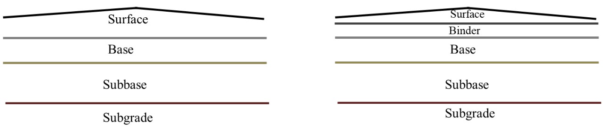
Surface course
- Top layer
- Should be smooth, abrasion resistant, dust free, reasonably water proof and strong
Base and Subbase course
- Distribute wheel load evenly to the underlying layers
- Granular materials
- Base layer use superior material compared to subbase layer
- Subbase layer good drainage property
Subgrade
- Natural soil
- Should be well-compacted/provided with suitable treatment
Binder course
- Replace part of surface course
Types of Pavement
Depending on structural behavior:
- Flexible Pavement
- Rigid Pavement
- Semi-Rigid Pavement
- Composite Pavement
Flexible Pavement
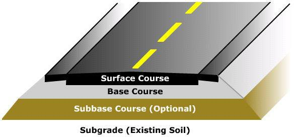
- Low flexural strength
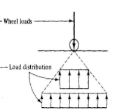
- Deflects momentarily under load but rebounds on removal of load
- Load transmission to the subgrade by lateral distribution with grain to grain point of contacts
- Designed in layers, empirical method
Rigid Pavement
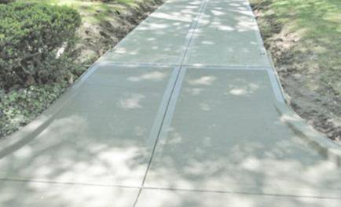
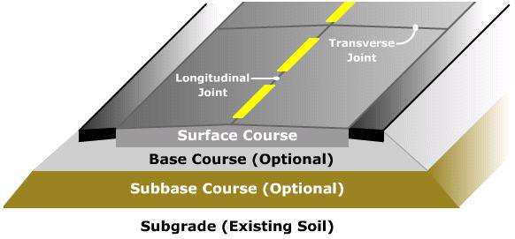
- Cement concrete slab
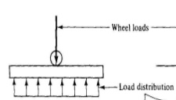
- High flexural strength
- Load distribution by slab action
- Permanent settlements
- Design by structural analytical techniques
Semi-Rigid Pavement
- Base, subbase of bonded materials such as pozzolanic cement, lean cement concrete, soil cement
- Flexible pavement surface course
- Higher flexural strength than flexible pavement but much lower than that of a rigid pavement
Composite Pavement
- PCC bottom layer, HMA top layer
- Ideal pavement
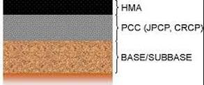
- Very expensive, rarely used in new construction
- Mostly rehabilitation of PCC using asphalt overlays
Difference between Flexible and Rigid Pavement
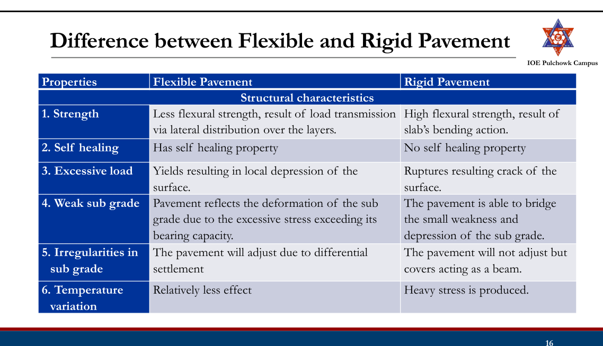
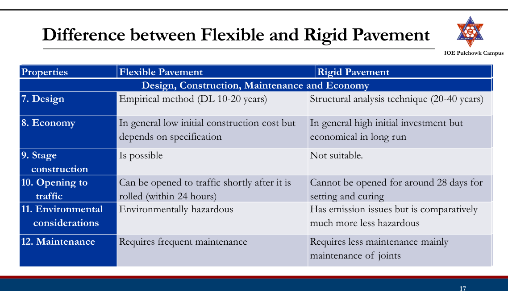
3.2 Factors controlling pavement design20812078
Past Exam Questions on this Topic
- Explain the various factors affecting the pavement design. [8] (2081 Bhadra, Q5)
Solution
The design of a pavement is controlled by four groups of factors.
1. Traffic and loading factors
- Axle load — the wheel load is transmitted to the surface through the tyre; the heavier the wheel load the thicker the pavement. Design is governed by the commercial vehicles.
- Wheel configuration — single / dual / tandem wheels change the stress distribution; a dual wheel set is converted to an Equivalent Single Wheel Load (ESWL).
- Axle configuration — single, tandem, tridem axles carry more load with less damage per tonne; converted by the fourth-power law.
- Number of load repetitions — accumulated as CSA (= 365·A·[((1+r)n−1)/r]·LDF·VDF).
- Contact area / tyre pressure — fixes the radius of the loaded area a; for thin pavements the tyre pressure governs, for thick pavements the total load governs.
- Vehicle speed — slow (creep) traffic loads the layer far longer, lowering the resilient modulus of the bituminous layers and increasing rutting; critical on gradients and at junctions.
2. Material properties (including the subgrade)
- Subgrade strength expressed as soaked CBR or resilient modulus MR (MR = 10.3×CBR MPa); the design value is the 87.5 / 90 percentile of the tested samples.
- Elastic / resilient moduli and Poisson's ratios of the bituminous, granular and cemented layers; for repeated loading the resilient modulus is the correct parameter.
- Quality, grading and durability of aggregates; binder type and content.
3. Environmental factors
- Temperature — changes the modulus of the bituminous layer (softening in summer, low-temperature cracking in winter); in rigid pavements it produces the warping and frictional stresses.
- Precipitation / drainage — infiltration raises the subgrade moisture, lowers its CBR and causes pumping and loss of support; frost action in cold regions.
- Road geometry (gradient, curvature) has a small but real effect through speed and drainage.
4. Failure criteria — the design must satisfy the distress models used by the method:
- Fatigue cracking — limits the horizontal tensile strain at the bottom of the bituminous layer.
- Rutting — limits the vertical compressive strain on top of the subgrade (or the rut depth).
- Thermal cracking; and for rigid pavements, fatigue of the concrete under the combined load + warping stress against the modulus of rupture.
The four-group classification is exactly the one used in Lecture 14 (§3.2 of these notes) and in Manual.pdf §2.3 — "Loads and other factors controlling pavement design", book pp.116-121.
- What are the factors that affect in pavement design? How are they considered in AASHTO method? [1+7] (2081 Baishakh, Q5)
Solution
(a) Factors affecting pavement design — traffic and loading (axle load, wheel/axle configuration, repetitions, contact pressure, speed), subgrade and material properties, environment (temperature, moisture, drainage, frost) and the adopted failure criteria.
(b) How AASHTO-1993 accounts for them
All of the above enter the single empirical design equation obtained from the AASHO Road Test:
log₁₀W₁₈ = ZRS₀ + 9.36 log₁₀(SN+1) − 0.20 + log₁₀[ΔPSI/(4.2−1.5)] / [0.40 + 1094/(SN+1)5.19] + 2.32 log₁₀MR − 8.07Factor How it enters the AASHTO method Traffic & loading W18 = cumulative 80 kN (18-kip) ESAL in the design lane, obtained from the traffic count × truck factor × growth factor × directional factor × lane-distribution factor. Reliability ZR (standard normal deviate for the chosen reliability R) and S0 (overall standard deviation, 0.40-0.50 for flexible pavements) shift the design to the safe side. Serviceability (riding quality) ΔPSI = pi − pt (initial minus terminal present serviceability index, e.g. 4.2 − 2.5). Subgrade Effective roadbed resilient modulus MR (psi), obtained from the soaked CBR (MR ≈ 1500×CBR psi = 10.3×CBR MPa) with a seasonal correction. Materials Structural layer coefficients a1, a2, a3 correlated with the layer moduli, e.g. a1 = 0.323·log10E1 − 1.42, a2 = 0.249·log10E2 − 0.977, a3 = 0.227·log10E3 − 0.839. Environment / drainage Drainage coefficients m2, m3 (0.40-1.40) applied to the unbound layers; the seasonal variation of MR is averaged over the year. The equation is solved for the required structural number SN, and the thicknesses follow from
SN = a₁D₁ + a₂D₂m₂ + a₃D₃m₃worked layer by layer — SN1 is computed with the MR of the base, SN2 with that of the sub-base and SN3 with that of the subgrade, so that each layer is protected by the layers above it.
Manual.pdf §2.4.4 — AASHTO method of flexible pavement design, book pp.144-149.
- Explain Vehicle Damage Factor (VDF) used in design of flexible pavements. An existing two-lane single carriageway highway is proposed to be widened to a new 4-lane divided carriageway. Design the flexible pavement for the proposed highway using the information provided in the design catalogues: i) 4-lane divided carriageway; ii) The expected traffic in the year of completion of construction is 4000 commercial vehicles per day in both directions with 30% heavy trucks of 100 kN axle load, 50% light trucks of 80 kN axle load and 20% tractors of 70 kN axle load; iii) Design life = 15 years; iv) Percentage CBR values obtained from seven different locations along the stretch of the highway are 9, 7, 8, 5, 4, 5 and 6.5 respectively; v) Traffic growth rate = 8%. (Design catalogues for CBR 4% and CBR 5% are printed on the question paper.) [2+6] (2078 Bhadra, Q1)
Design catalogue — subgrade CBR 4% Cumulative traffic (msa) Total pavement thickness (mm) BC (mm) DBM (mm) Granular base and sub-base (mm) 10 700 40 80 base 250
sub-base 33020 730 40 110 30 750 40 130 50 780 40 160 100 800 50 170 150 820 50 190 Design catalogue — subgrade CBR 5% Cumulative traffic (msa) Total pavement thickness (mm) BC (mm) DBM (mm) Granular base and sub-base (mm) 10 660 40 70 base 250
sub-base 30020 690 40 100 30 710 40 120 50 730 40 140 100 750 50 150 150 770 50 170 Solution
(a) Vehicle Damage Factor (VDF) [2]
VDF is the number of standard 80 kN axles that cause the same pavement damage as one pass of the commercial vehicle in question:
VDF = Σall axles (axle load / 80 kN)⁴It converts a mixed axle-load spectrum into a single equivalent traffic figure. VDF is obtained from an axle-load survey; in its absence IRC-37 gives indicative values by terrain and by initial traffic volume (e.g. 3.5 for plain/rolling terrain with 150-1500 cvpd). Cumulative standard axles then follow as CSA = 365·A·[((1+r)n−1)/r]·LDF·VDF.
(b) Design of the widened 4-lane divided carriageway [6]
Traffic in the year of completion = 4000 cvpd in both directions — 30% heavy trucks @ 100 kN axle, 50% light trucks @ 80 kN axle, 20% tractors @ 70 kN axle · design life n = 15 yr · growth r = 8% · CBR at seven locations = 9, 7, 8, 5, 4, 5, 6.5%Vehicle damage factor
Vehicle class Share Axle load EF = (L/80)4 Share × EF Heavy truck 30% 100 kN (100/80)4 = 2.4414 0.7324 Light truck 50% 80 kN (80/80)4 = 1.0000 0.5000 Tractor 20% 70 kN (70/80)4 = 0.5862 0.1172 VDF 1.3497 Traffic in the design lane
A four-lane divided highway is a dual two-lane carriageway; the Manual (book p.122) gives LDF = 75% of the commercial vehicles in each direction.
traffic per direction = 4000 / 2 = 2000 cvpd Alane = 0.75 × 2000 = 1500 cvpdCumulative standard axles
The traffic is already given at the year of completion, so no further projection is needed.
growth factor = [(1.08)15 − 1]/0.08 = (3.17217 − 1)/0.08 = 27.152 CSA = 365 × 1500 × 27.152 × 1.3497 = 2.01 × 10⁷ ≈ 20 msaDesign subgrade CBR (87.5 percentile)
Arrange the seven values in descending order and take percentile = (rank/N)×100:
CBR (%) 9 8 7 6.5 5 5 4 Rank 1 2 3 4 5 6 7 Percentile 14.3 28.6 42.9 57.1 71.4 85.7 100 interpolate between (85.7 %, CBR 5) and (100 %, CBR 4): CBR87.5 = 5 + (87.5 − 85.7)/(100 − 85.7) × (4 − 5) = 4.87 % ≈ 5 %Being marginally below 5%, the CBR 4% catalogue is adopted (safe side).
Read the design catalogue supplied with the question (CBR 4%, 20 msa)
Selected pavement composition Layer Thickness Bituminous concrete (BC) 40 mm Dense bituminous macadam (DBM) 110 mm Granular base (WMM) 250 mm Granular sub-base (GSB) 330 mm Total crust 730 mm Provide 40 mm BC + 110 mm DBM + 250 mm granular base + 330 mm granular sub-base = 730 mm total crust.If the CSA is rounded up to the next catalogue step of 30 msa the total becomes 750 mm with 130 mm DBM.
LDF = 0.75 per direction for a dual two-lane carriageway and the 87.5-percentile tabulation are from Manual.pdf book pp.122 and 178-179; the catalogue is the one printed on the question paper (2078 Bhadra, page 1).
Factors Controlling Pavement Design
- Traffic and loading factors
- Material properties
- Environment factor
- Failure criteria
1. Traffic and Loading Factors
- Axle load
- Number of load repetitions
- Contact area
- Vehicle speed
Axle load
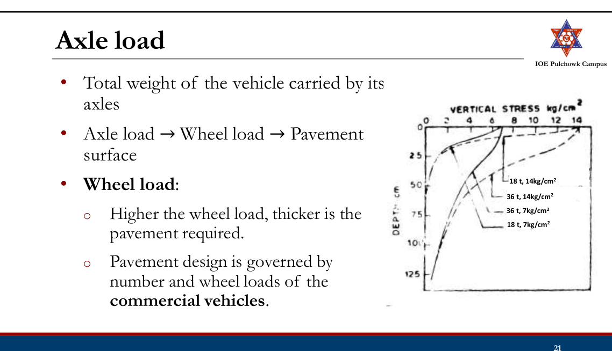
- Wheel configuration:
- Most commercial vehicles are provided with dual rear wheels
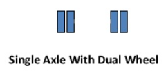
- Affects the stress distribution and deflection
- Design:
Flexible pavement: Wheels on only one side is considered
Rigid pavement: Wheels on both sides are considered
- Dual wheel load is converted into equivalent single wheel load to simplify the analysis.
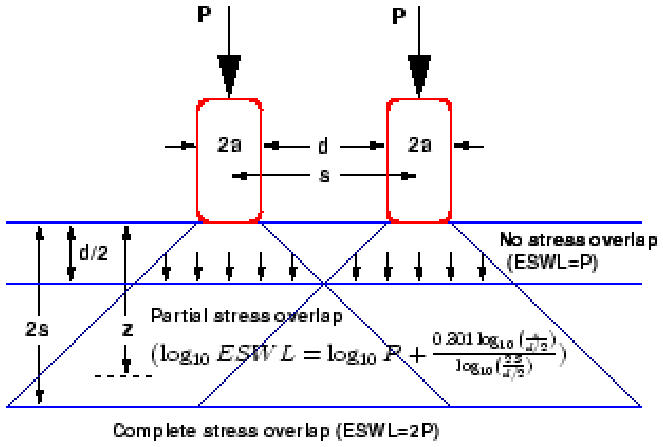
- Axle configuration:
- Commercial vehicles are provided with multiple axles to further enhance the load carrying capacity.
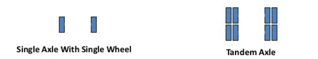
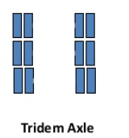
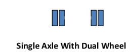
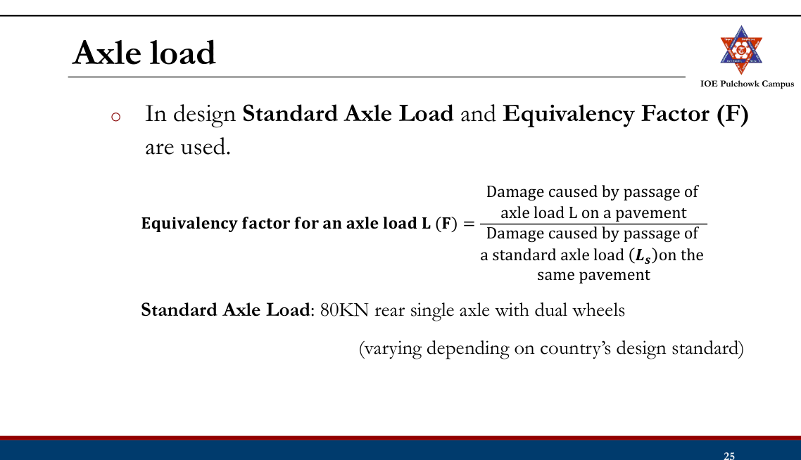
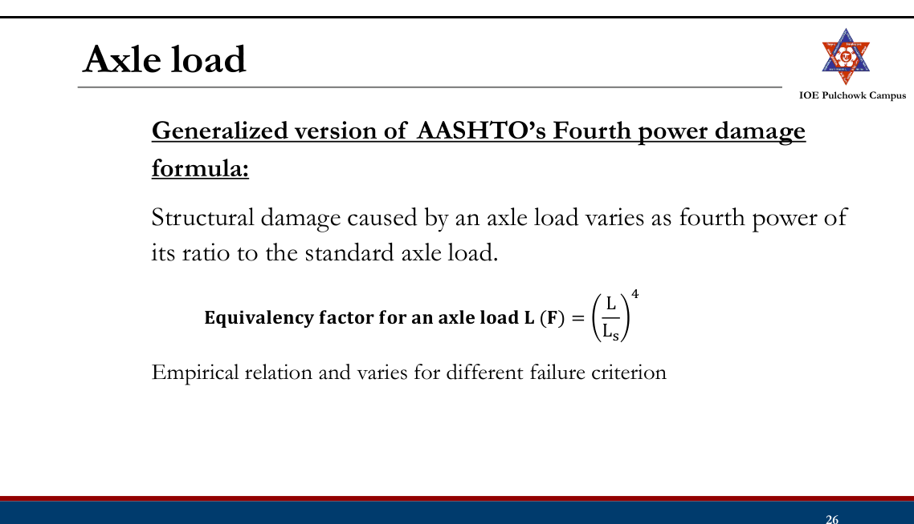
Number of Load Repetitions
- Repeated application of the wheel load → pavement distress → pavement failure
- Total number of repetitions of the axle loads is computed as Cumulative Number of Standard Axles for the design life.
Contact Area
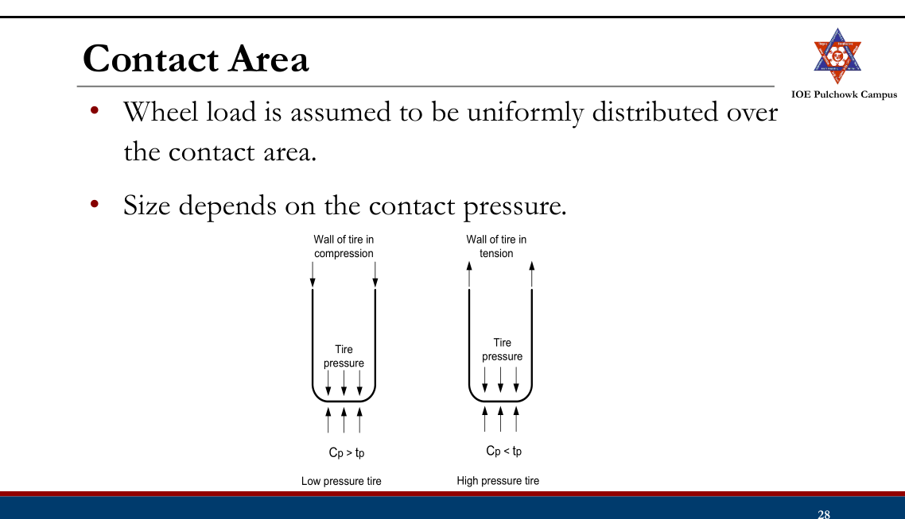
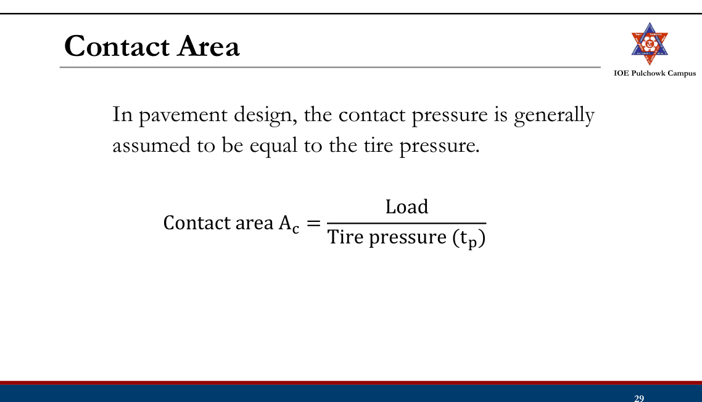
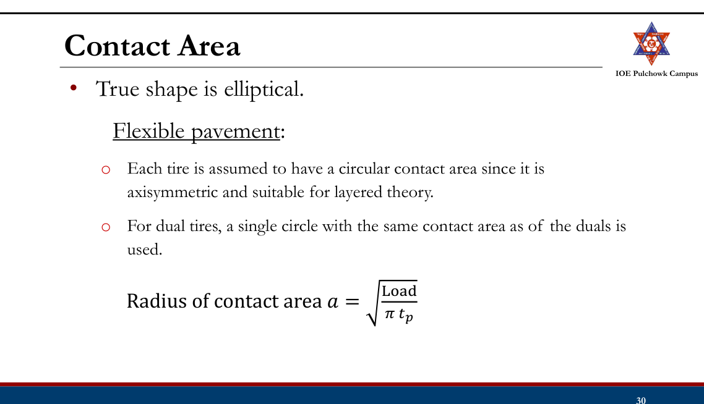
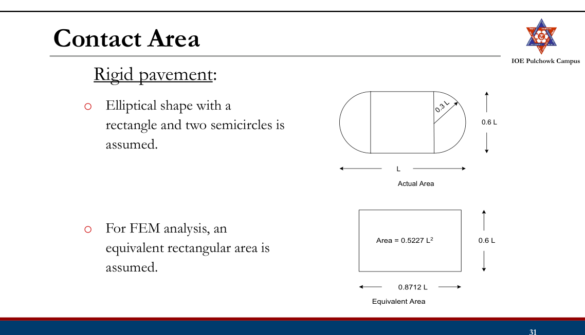
Vehicle Speed
- Vehicle speed is directly related to duration of loading.
- The damage to the pavement is much higher if the vehicle is moving at creep speed.
- The resilient modulus of the pavement layers should be selected carefully considering the combination of loading and vehicle speed.
2. Material Properties
- Must be specified to determine pavement responses (stresses, strains and displacements)
- Linearly elastic: Elastic moduli and Poisson’s ratios
- For consideration of moving load/repetition of load, resilient modulus is a better representative.
- Nonlinear property of material can be characterized by a stress dependent resilient modulus.
3. Environment Factor
- Temperature
- Precipitation
- Road geometry (small effect)
Temperature
Both temperature and precipitation affect elastic moduli of pavement layers.
Flexible pavement:
- Affects resilient modulus of asphalt layer.
- Low temperature can cause asphalt pavement to crack.
Rigid pavement:
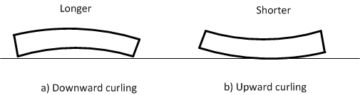
- Create curling stress and affect slab subgrade contact and the stress values.
- Determine joint and crack openings and affect the efficiency of load transfer.
- Frost penetration is another temperature effect that affects the subgrade strength in cold climate.
Precipitation
- Quantity of surface water infiltration affects the moisture content of the subgrade and the depth of GWT.
- Poor drainage may bring lack of shear strength, pumping, loss of support etc.
4. Failure Criteria
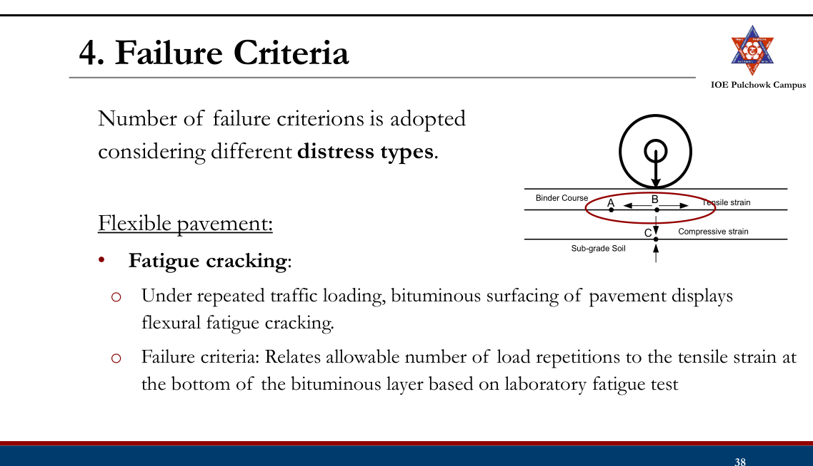
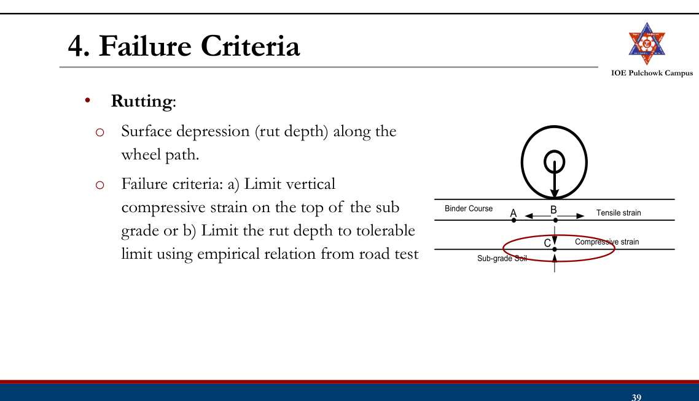
- Thermal cracking:
- Low temperature cracking
- Thermal fatigue cracking
- Mix stiffness and fracture strength relationship to temperature, tensile strain due to daily temperature cycle
Rigid pavement:
- Fatigue cracking:
- Major failure criteria in rigid pavement design.
- Due to load and temperature stress.
- Allowable number of load repetitions depends on ratio of flexural tensile stress and concrete modulus of rupture.
- Pumping, faulting/spalling/joint deterioration
- Difficult to analyze mechanistically
Practice Tasks from the Lecture
- Highway pavement, structural components of pavement
- Types of pavement
- Difference between flexible and rigid pavement
- Factors controlling pavement design
- Traffic and loading factors, material characteristics, environmental factors, failure criteria
- Explore DOR flexible pavement design guidelines, 2021
3.3 Historical development of pavement structures (Flexible pavement design): Theoretical (Boussinesq and Burmister approach); Semi-empirical (Tri-axial approach); and empirical methods
Flexible Pavement Design: Historical Development
- Theoretical / mechanistic methods
- Semi-empirical method
- Empirical methods
- Mechanistic-empirical method
Theoretical/Mechanistic Design Method
- Materials forming the flexible pavement layers and the soil supporting the pavement have non-uniform properties.
- No completely satisfactory method of design based on theoretical considerations
- Approaches:
- Boussinesq’s theory
- Burmister approach
Boussinesq’s Theory
- A layer theory first derived by Joseph Valentin Boussinesq in 1885
- First attempt towards analytical solution.
- Using the layer theory as a structural model, stresses, strains and deflections at any point in the layered system can be obtained.
- One layered system
Assumptions The soil mass is:
- Homogenous
- Isotropic
- Ideally elastic (constant elastic parameters E and μ for all the pavement layers and the subgrade soil)
- Semi-infinite
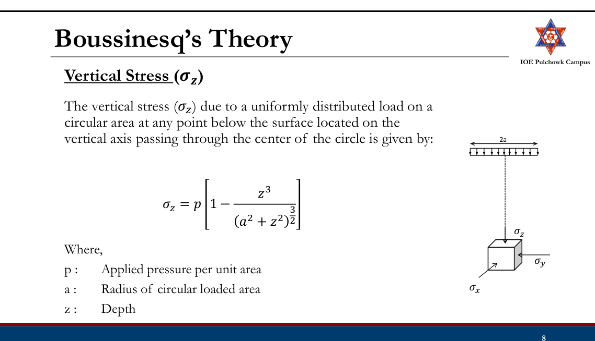
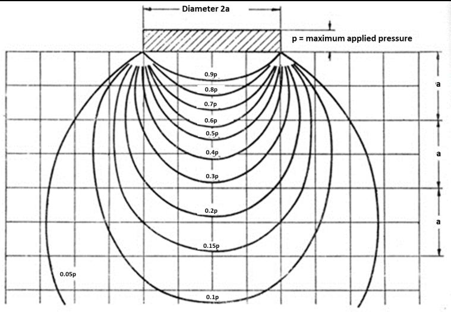
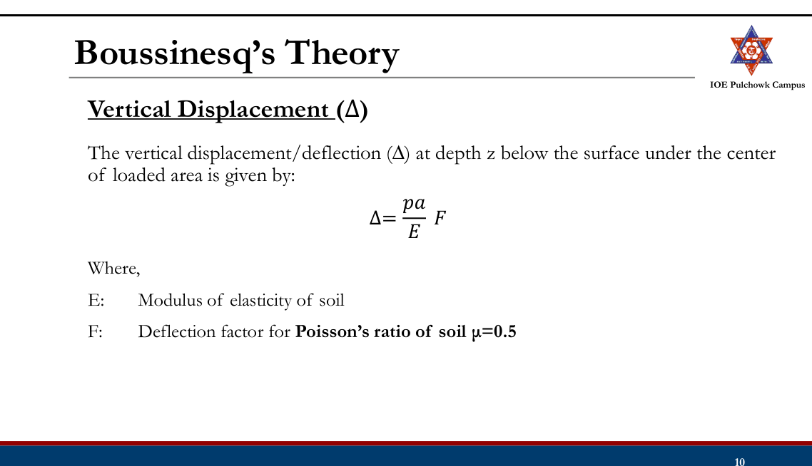
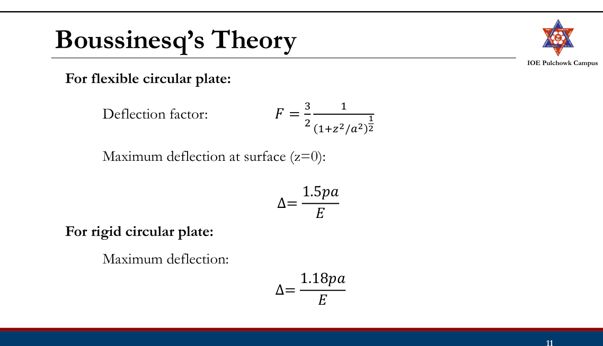
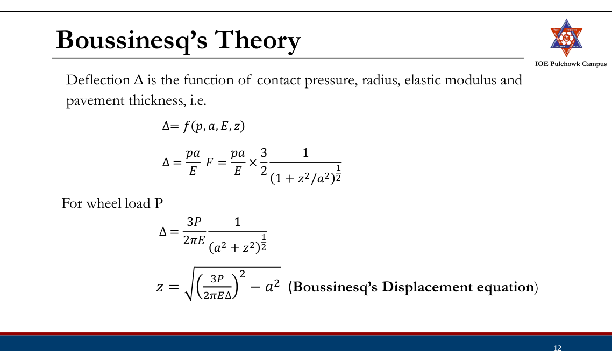
Drawbacks
- Soils are not perfectly elastic and homogenous.
- Modulus of Elasticity E of all pavement layers are not constant.
- Load may not be uniformly distributed.
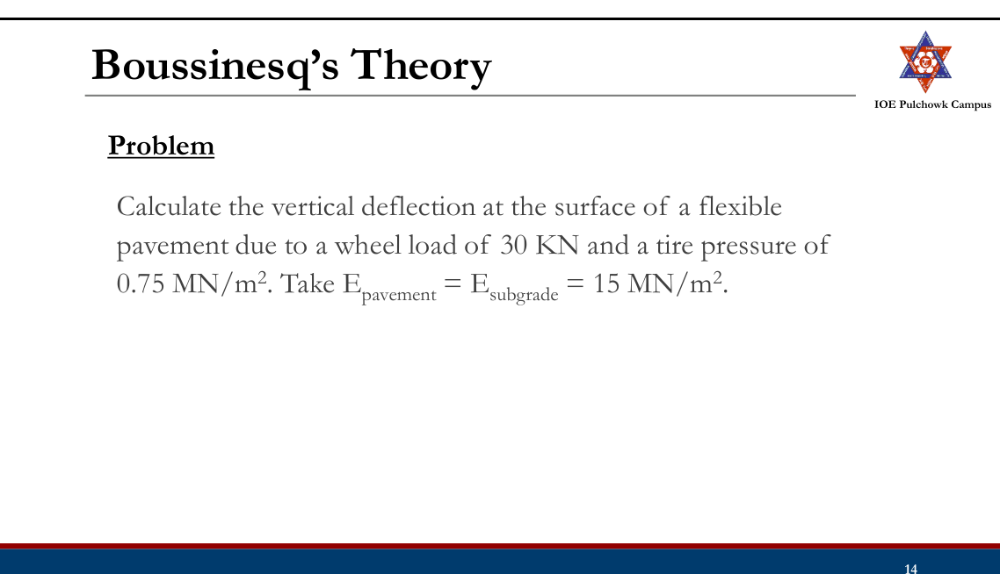
Burmister’s Theory
- By Donald M. Burmister 1945
- Stresses and strains in two layered system (a pavement layer and a subgrade layer)
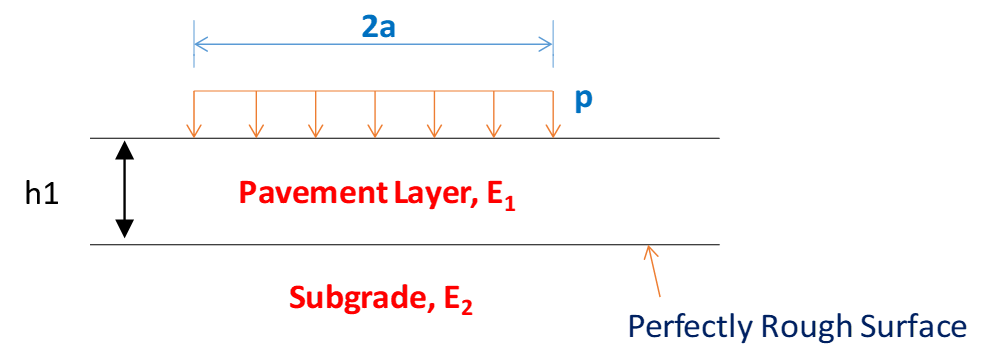
Assumptions
- Materials in the layers are homogeneous, isotropic and elastic.
- Surface layer is infinite in extent in the lateral direction but of finite depth, whereas the underlying layer is infinite in both the horizontal and vertical direction.
- Layers are in continuous contact and full friction is developed between the interface (perfectly rough interface)
- Stress solutions are characterized by two material properties E and μ.
- Surface layer is free of shearing and normal stresses outside the loaded area.
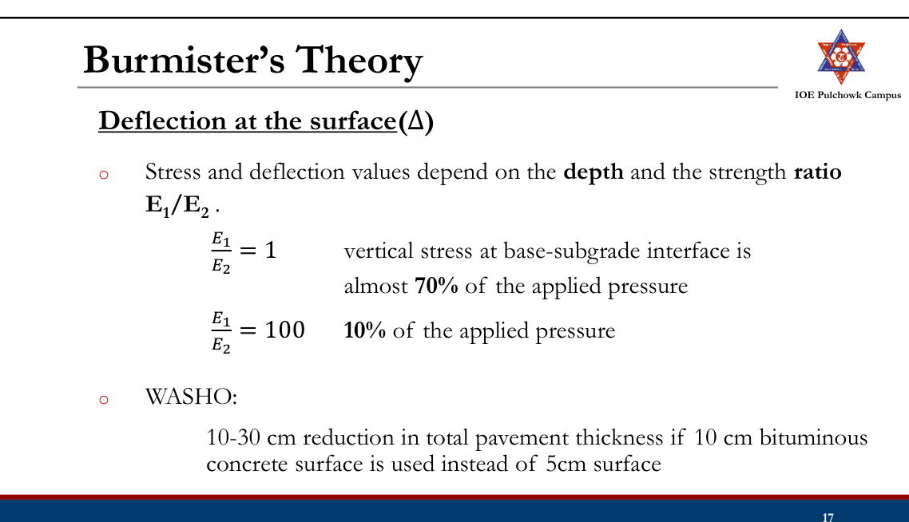
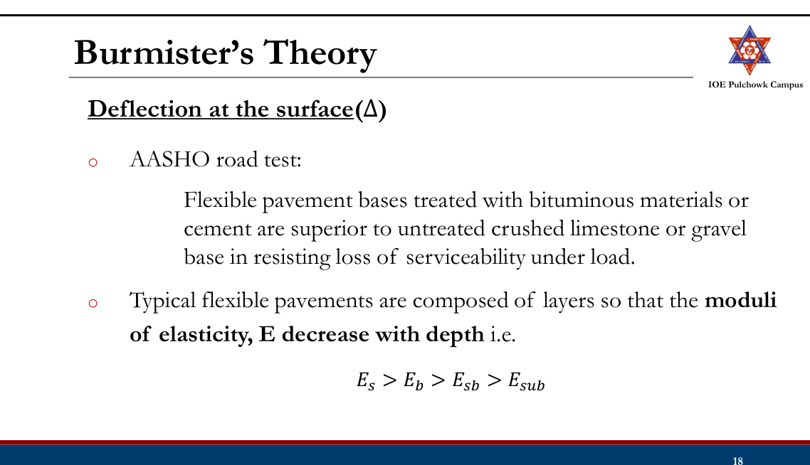
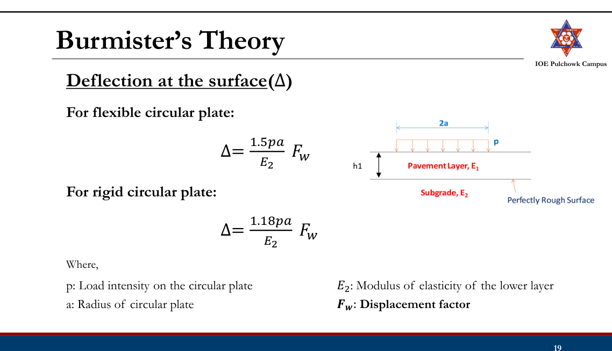
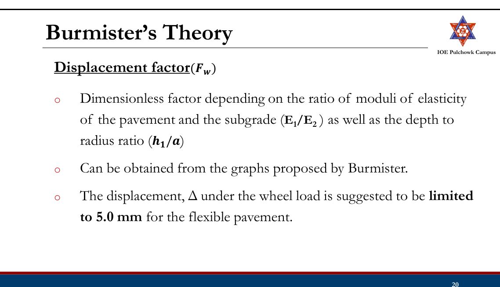
Displacement factor(𝑭𝒘)
Burmister’s Theory
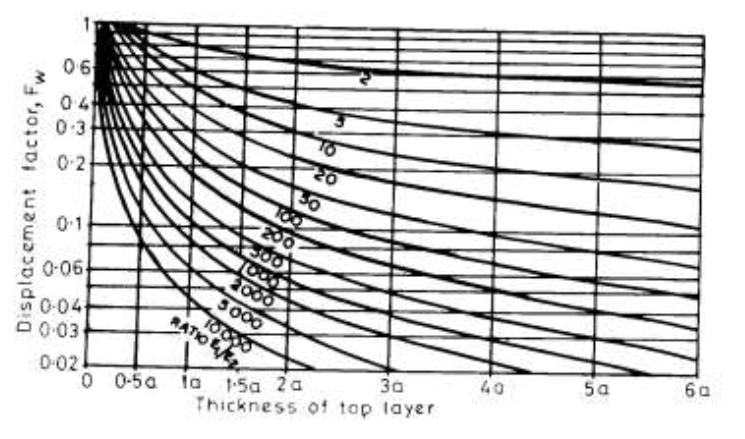
Burmister’s Theory
Problem Plate bearing tests were conducted with a 75cm diameter plate on soil subgrade and a granular base. The stress was 0.02MN/m2 when the deflection on the subgrade soil was 0.25cm. The same plate yielded 0.25cm deflection on the base course of 15cm under a stress of 0.05MN/m2. Design the pavement for an allowable deflection of 0.5cm under a wheel load of 40KN and tire pressure of 0.5MN/m2.
Semi-Empirical Method
- Basically, theoretical but includes empirical modifications
- Approach:
- Triaxial Method
Triaxial Method
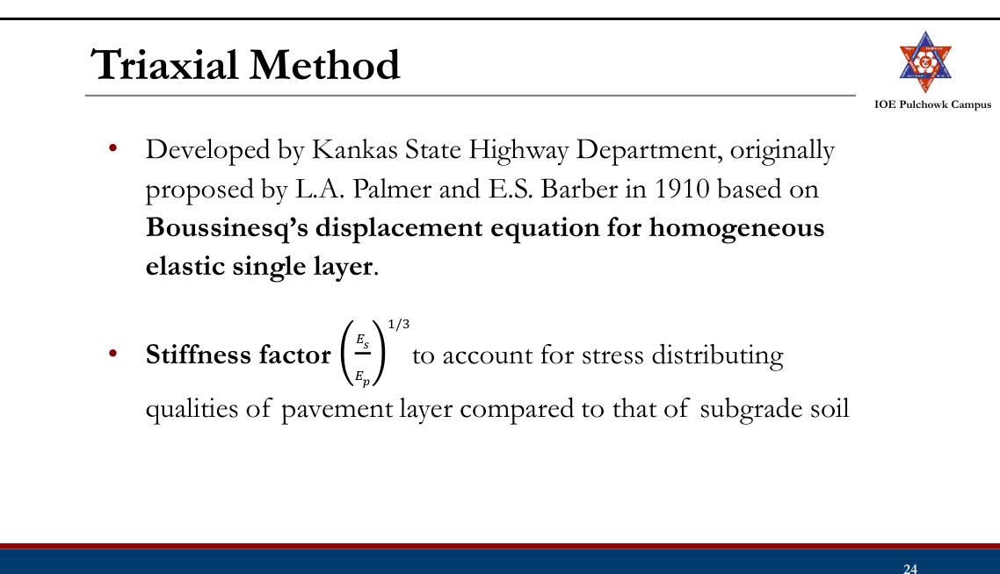
- Employs empirical modifications
- Traffic coefficient (X)
- Saturation coefficient (Y)
- X is based on the ADT of design traffic
- Y is based on the annual rainfall
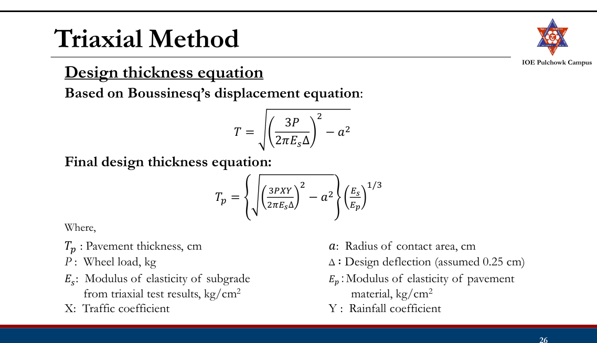
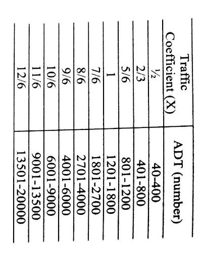
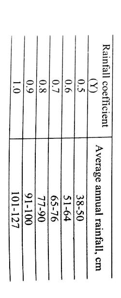
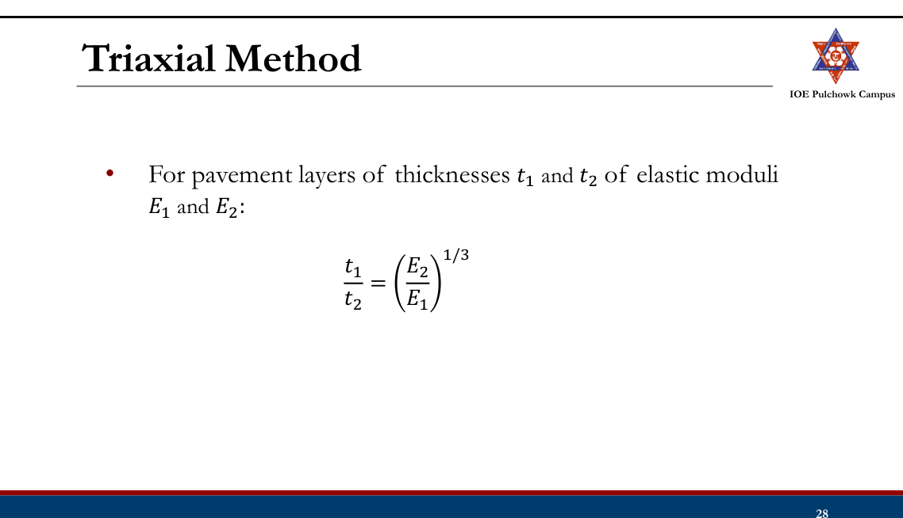
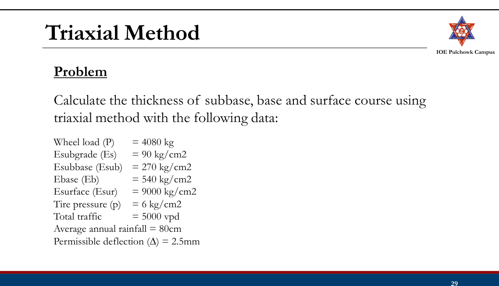
Empirical Method
- Based on Soil Classification (Group Index Method)
- Based on Arbitrary Soil Strength Test (CBR Methods: IRC:37-1970, Road Note 29, Road Note 31)
- Based on Pavement Performance (AASHTO Method)
Mechanistic-Empirical Methods
- Considers mechanics of materials together with observed performance
- Pavement configuration, structural model (Stress/strain), distress model/failure criteria
- Asphalt Institute Method, IRC 37-2001 and onwards, DoR guidelines
Practice Tasks from the Lecture
- Check mechanistic and semi-empirical methods for design of flexible pavements (Boussinesq’s Theory, Burmister’s Theory, Triaxial Method) and practice design problems
3.4 Design of flexible pavement by IRC, DoR guidelines, Road Note 31, AASHTO method20822080207620752074207220712068
Past Exam Questions on this Topic
- A new four lane divided highway is to be designed for the ADT of 8000 truck traffic based on the last count. The directional split of traffic is 55:45. Vehicle damage factor based on axle load survey was 4.0. Design a suitable pavement section for a design life of 15 years. The last traffic count was taken 1 year back and the project would be completed in 2 years from now. Growth rate of traffic = 7%. The results of subgrade soil CBR at seven locations obtained in a certain stretch of road are given in the table below. [8] (2082 Bhadra, Q6)
Subgrade CBR test results along the stretch S.No. Chainage Test CBR result (%) 1 0+50 12 2 0+350 8 3 0+500 7 4 0+650 8 5 0+800 6 6 0+950 5 7 1+500 5 Solution
New four-lane divided highway · last count ADT = 8000 commercial vehicles/day (both directions) · directional split 55 : 45 · VDF = 4.0 · design life n = 15 yr · count taken 1 year ago, construction finishes 2 years from now · growth r = 7% · subgrade CBR at seven chainages = 12, 8, 7, 8, 6, 5, 5%Traffic in the predominant direction at the year of completion
time from the count to opening, x = 1 + 2 = 3 years heavier-direction traffic now = 0.55 × 8000 = 4400 cvpd A = 4400 (1 + 0.07)³ = 4400 × 1.225043 = 5390 cvpdLane distribution factor
A four-lane divided highway is a dual two-lane carriageway → design on 75% of the commercial vehicles in each direction (Manual p.122).
Alane = 0.75 × 5390 = 4043 cvpdCumulative standard axles over the design life
growth factor = [(1.07)15 − 1]/0.07 = (2.759032 − 1)/0.07 = 25.129 CSA = 365 × Alane × 25.129 × VDF = 365 × 4043 × 25.129 × 4.0 = 1.483 × 10⁸ = ≈ 148 msaDesign subgrade CBR (87.5 percentile)
Arrange in descending order; percentile = (rank/N) × 100 with N = 7:
CBR (%) 12 8 8 7 6 5 5 Rank 1 2 3 4 5 6 7 Percentile 14.3 28.6 42.9 57.1 71.4 85.7 100 At 87.5% (and equally at the 90 percentile used by IRC-37 for major roads) the value read off is design CBR = 5%, because the two weakest samples are both 5%.
Pick the section from the DoR-2021 / IRC-37 catalogue
Effective CBR 5% and 150 msa (the next catalogue step above 148 msa):
Design section — CBR 5%, 150 msa Layer Thickness Bituminous concrete (BC) 90 mm Dense bituminous macadam (DBM) 150 mm Granular base — WMM 300 mm Granular sub-base — GSB 300 mm Total crust 840 mm Provide 90 mm BC + 150 mm DBM + 300 mm WMM base + 300 mm GSB = 840 mm over a subgrade compacted to CBR 5% (top 500 mm), with the drainage layer and 2.5% cross-fall.Design-traffic equation and LDF from Manual.pdf book p.122; percentile tabulation from book pp.178-179; catalogue thicknesses from the DoR-2021 / IRC-37 "Effective CBR 5%" table reproduced in §3.4 of these notes (Lecture 18-19).
- The flexible pavement was designed for a two lane two way road as shown in the figure. The drainage coefficient for the base layer is 1, the layer coefficients for the surface and base layers are a1 = 0.323 log10(E1) - 1.42 and a2 = 0.249 log10(E2) - 0.977, where E1 and E2 are in psi. Determine the initial commercial vehicles per day the road was designed for. Traffic growth rate = 6%, construction period = 2 yrs, design life 10 yrs, VDF = 2.5. [Figure: HMA surface E1 = 365 ksi, 5.3 in thick; granular base E2 = 30 ksi, 8.6 in thick; subgrade E3 = 9 ksi.] [8] (2080 Bhadra, Q5)
Solution
From the figure — HMA surface E1 = 365 ksi, D1 = 5.3 in · granular base E2 = 30 ksi, D2 = 8.6 in, m2 = 1.0 · subgrade E3 = MR = 9 ksi · two-lane two-way road · r = 6% · construction 2 yr · design life n = 10 yr · VDF = 2.5This is the AASHTO design run backwards: section → SN → W18 → initial commercial vehicles per day.
Structural layer coefficients (E in psi)
a₁ = 0.323 log₁₀(365 000) − 1.42 = 0.323 × 5.5623 − 1.42 = 0.3766 a₂ = 0.249 log₁₀(30 000) − 0.977 = 0.249 × 4.4771 − 0.977 = 0.1378Structural number of the existing section
SN = a₁D₁ + a₂D₂m₂ = 0.3766 × 5.3 + 0.1378 × 8.6 × 1.0 = 1.996 + 1.185 = 3.18Allowable ESAL from the AASHTO-1993 equation
The paper does not restate the reliability data, so the values printed with this same figure in the companion paper are adopted: R = 90% (ZR = −1.282), S0 = 0.5, ΔPSI = 2.0, MR = 9000 psi.
ZRS₀ = −1.282 × 0.5 = −0.641 9.36 log₁₀(SN+1) = 9.36 × 0.62126 = +5.815 (SN+1)5.19 = 4.1815.19 = 1676 → 0.40 + 1094/1676 = 1.0527 log₁₀(2.0/2.7)/1.0527 = −0.13033 / 1.0527 = −0.124 2.32 log₁₀(9000) = 2.32 × 3.95424 = +9.174 ——————————————————————————————————————— log₁₀W₁₈ = −0.641 + 5.815 − 0.20 − 0.124 + 9.174 − 8.07 = 5.954 W₁₈ = 105.954 = 9.0 × 10⁵ ESALBack-calculate the initial commercial traffic
For a two-lane two-way road LDF = 0.75 (Manual p.122); the traffic must first grow through the 2-year construction period:
W₁₈ = 365 × P(1+r)² × [((1+r)ⁿ−1)/r] × LDF × VDF [(1.06)10 − 1]/0.06 = 13.181 (1.06)² = 1.1236 365 × 1.1236 × 13.181 × 0.75 × 2.5 = 10 136 P = 9.0 × 10⁵ / 10 136 = ≈ 89 cvpdThe road was designed for an initial traffic of ≈ 89 commercial vehicles per day (about 100 cvpd at the time the road is opened).AASHTO-1993 equation, layer-coefficient correlations and LDF as given in Manual.pdf §2.4.4 (book pp.144-149) and p.122. R, S0 and ΔPSI are the values printed with the identical figure in the 2080 Baishakh paper (Q6).
- A 4-lane divided highway is to be constructed on a new alignment. Traffic volume forecasts indicate that the AADT in both directions during the first year of operation will be 12,000 with 50% passenger cars (5 kN/axle), 33% two-axle single unit trucks (25 kN/axle) and 17% three-axle single unit trucks (30 kN/axle). The vehicle mix is expected to remain the same throughout the design life of the pavement. If the expected annual traffic growth rate is 4% for all vehicles, design the pavement with AC of thickness 7.5 cm, base and sub base. CBR of subgrade 6.5%, E_sub-base = 275 MPa, E_base = 500 MPa and E_surface = 2400 MPa. [8] (2076 Ashwin, Q5)
Solution
New 4-lane divided highway · AADT both directions in the first year = 12 000 — 50% passenger cars (5 kN/axle), 33% two-axle single-unit trucks (25 kN/axle), 17% three-axle single-unit trucks (30 kN/axle) · growth r = 4% · AC surfacing fixed at 7.5 cm · subgrade CBR = 6.5% · Esurface = 2400, Ebase = 500, Esub-base = 275 MPa · design life not stated — take n = 20 yrTruck factor of each class (fourth-power law, all axles of the vehicle)
Class No./day Axles Axle load EF per axle Truck factor Daily ESAL Passenger car 6000 2 5 kN (5/80)4 = 0.0000153 0.0000305 0.18 2-axle truck 3960 2 25 kN (25/80)4 = 0.009537 0.019073 75.53 3-axle truck 2040 3 30 kN (30/80)4 = 0.019775 0.059326 121.03 Total daily ESAL, both directions 196.7 Design-lane ESAL
Divided highway → directional distribution factor D = 0.50; dual two-lane carriageway → LDF = 0.75 (Manual p.122).
growth factor = [(1.04)20 − 1]/0.04 = (2.19112 − 1)/0.04 = 29.778 Ns = 365 × 196.7 × 29.778 × 0.50 × 0.75 = 8.0 × 10⁵ ESAL (for n = 15 yr the growth factor is 20.024 → Ns = 5.4 × 10⁵)Design subgrade resilient modulus
MR = 10.3 × CBR = 10.3 × 6.5 = 67.0 MPaFull depth of asphalt concrete
From the Asphalt Institute design chart (full-depth AC) attached to the paper, for Ns = 8.0 × 105 EAL and MR = 67 MPa → full depth ≈ 210 mm (chart read-off).
Convert to the real layers
Manual's thickness-equivalency rule tlower = tupper-equivalent × (Eupper/Elower)1/3:
AC surfacing fixed at 75 mm → AC still to replace = 210 − 75 = 135 mm base equivalent = 135 × (2400/500)1/3 = 135 × 1.686 = 228 mm provide granular base = 125 mm → remaining = 103 mm sub-base = 103 × (500/275)1/3 = 103 × 1.222 = 126 mm provide = 150 mm (practical minimum)Section (top → bottom): 75 mm asphalt concrete / 125 mm granular base (E = 500 MPa) / 150 mm granular sub-base (E = 275 MPa) over the subgrade of CBR 6.5%.Truck-factor tabulation, LDF, MR = 10.3×CBR, the AI design chart and the (E1/E2)1/3 substitution rule are the procedure of Manual.pdf §2.5 — solved problems 2 and 3, book pp.178-182. The full-depth value is a chart read-off, so a 200-225 mm answer is equally acceptable.
- Design the flexible pavement for a 4-lane single carriageway road with the following parameters: i) Initial traffic in each direction 2000 CVPD; ii) Design life = 15 years; iii) Construction period = 3 years; iv) Traffic growth rate = 8%; v) Design CBR value 6%; vi) Modulus of elasticity of asphalt concrete surface course = 2500 MPa; vii) Modulus of elasticity of bituminous treated base = 1200 MPa; viii) Modulus of elasticity of granular subbase course = 125 MPa; ix) Axle load distribution of commercial vehicles on the road is given in the table below. [8] (2075 Ashwin, Q6)
Axle load distribution of commercial vehicles Axle load (kN) 10 30 50 70 90 110 No. of axles (%) 15 15 20 30 10 10 Solution
4-lane single carriageway · initial traffic 2000 CVPD in each direction · n = 15 yr · construction 3 yr · r = 8% · design CBR = 6% · EAC = 2500, EBTB = 1200, EGSB = 125 MPa · axle-load spectrum as tabulated with the questionVehicle damage factor from the axle-load spectrum
VDF = Σ fi (Li/80)⁴Axle load L (kN) % of axles (L/80)4 Contribution 10 15 0.000244 0.000037 30 15 0.019775 0.002966 50 20 0.152588 0.030518 70 30 0.586182 0.175855 90 10 1.601807 0.160181 110 10 3.574463 0.357446 VDF 0.727 Traffic at the year of completion
commercial vehicles, both directions = 2 × 2000 = 4000 CVPD A = 4000 (1.08)³ = 4000 × 1.259712 = 5039 CVPDLane distribution
For a four-lane single carriageway the Manual (book p.122) prescribes design on 40% of the total commercial vehicles in both directions → LDF = 0.40.
Cumulative standard axles
growth factor = [(1.08)15 − 1]/0.08 = (3.17217 − 1)/0.08 = 27.152 Ns = 365 × 5039 × 27.152 × 0.40 × 0.727 = 1.45 × 10⁷ ESALDesign subgrade resilient modulus
MR = 10.3 × 6 = 61.8 MPaFull depth of asphalt concrete
From the Asphalt Institute full-depth design chart for 1.45 × 107 EAL and MR = 61.8 MPa → full depth ≈ 400 mm (chart read-off).
Substitute the real layers
AC wearing course (minimum) = 50 mm → AC to replace = 400 − 50 = 350 mm bituminous-treated base = 350 × (2500/1200)1/3 = 350 × 1.2772 = 447 mm provide BTB = 125 mm → remaining = 322 mm granular sub-base = 322 × (1200/125)1/3 = 322 × 2.1253 = 684 mmSection (top → bottom): 50 mm asphalt concrete (E = 2500 MPa) / 125 mm bituminous-treated base (E = 1200 MPa) / 685 mm granular sub-base (E = 125 MPa) over the subgrade of CBR 6%.Identical procedure and layer-substitution formula as Manual.pdf §2.5 solved problem 2 (book pp.178-180); LDF = 0.40 for a four-lane single carriageway, book p.122.
- Design a flexible pavement by using the Asphalt Institute method from the following data of a stretch of existing two lane road: a) Current traffic of 80 kN equivalent single axle load = 0.95 x 10^3 EAL/day; b) Traffic growth rate = 7.5%; c) Design period = 15 yrs; d) Construction period = 16 months; e) CBR of sub-grade to be taken = 5%; f) Elastic modulus of asphalt concrete surface course = 2500 MPa; g) Elastic modulus of bituminous treated base = 1200 MPa; h) Elastic modulus of granular sub base course = 125 MPa. Also draw a neat sketch of the pavement layers. [8] (2074 Ashwin, Q6)
Solution
Existing two-lane road · current traffic of 80 kN ESAL = 0.95 × 103 EAL/day · growth r = 7.5% · design period n = 15 yr · construction period 16 months · subgrade CBR = 5% · EAC = 2500, EBTB = 1200, EGSB = 125 MPa · minimum AC 50 mmTraffic at the end of the construction period
y = 16 months = 1.333 yr A = P(1 + r)ˣ = 0.95 × 10³ × (1.075)1.333 = 950 × 1.1013 = 1046 EAL/dayCumulative design traffic
Two-lane single carriageway → LDF = 0.75; no VDF is needed because A is already expressed in ESAL.
growth factor = [(1.075)15 − 1]/0.075 = (2.9589 − 1)/0.075 = 26.118 Ns = 365 × 1046 × 26.118 × 0.75 = 7.48 × 10⁶ EALDesign subgrade resilient modulus
MR = 10.3 × CBR = 10.3 × 5 = 51.5 MPaFull depth of asphalt concrete
From the Asphalt Institute design chart (full-depth AC) for Ns = 7.48 × 106 EAL and MR = 51.5 MPa → full depth ≈ 350 mm (chart read-off).
Replace the lower part of the AC by the real layers
AC surface course = 50 mm → AC to replace = 350 − 50 = 300 mm bituminous-treated base = 300 × (2500/1200)1/3 = 300 × 1.2772 = 383 mm provide BTB = 125 mm → remaining = 258 mm granular sub-base = 258 × (1200/125)1/3 = 258 × 2.1253 = 549 mmCross-section (top → bottom): 50 mm asphalt concrete / 125 mm bituminous-treated base / 550 mm granular sub-base over the subgrade (CBR 5%).Step-for-step the Asphalt Institute procedure of Manual.pdf §2.5, worked in Example 8 (book pp.152-154) and solved problem 3 (book pp.180-182): A = P(1+r)y, Ns = 365·A·[((1+r)n−1)/r]·LDF, MR = 10.3×CBR, chart, then (E1/E2)1/3 substitution.
- A road pavement is to be designed for a stretch of road with the following pavement layers: (i) Minimum thickness of asphalt concrete on the surface course 50 mm; (ii) Well graded crushed stone aggregate for base course, CBR value 90%; (iii) Fairly graded gravel for sub-base course, CBR value 20%; (iv) Compacted soil, CBR value 10%; (v) 90 percentile sub-grade CBR value = 4%. The road has a single lane carriageway and caters for a present ADT of 1200 commercial vehicles per day with an annual growth of 6%. The pavement is to be designed for a 10 year period. Design the pavement section using the IRC recommendation for the CBR method. The road is to be completed within 6 months from the initial traffic count. (2072 Chaitra, Q6)
Solution
Single-lane carriageway · present ADT = 1200 commercial vehicles/day · growth r = 6% · design life n = 10 yr · road completed 6 months (y = 0.5 yr) after the count · minimum asphalt-concrete surfacing 50 mm · base = well-graded crushed stone CBR 90% · sub-base = fairly graded gravel CBR 20% · compacted soil CBR 10% · 90-percentile subgrade CBR = 4%Design traffic volume
In the IRC CBR-curve method the design curve is chosen from the number of commercial vehicles per day at the end of the design life:
A = P(1 + r)(n + y) = 1200 (1.06)10.5 = 1200 × 1.8438 = ≈ 2213 commercial vehicles/dayFor a single-lane road the design is based on the total number of commercial vehicles in both directions (Manual p.122), i.e. 2213 cvpd — which lies in the band 1500-4500 → design curve F.
IRC traffic classification (Design Chart 1) Curve A B C D E F G cvpd > 3 t laden 0-15 15-45 45-150 150-450 450-1500 1500-4500 > 4500 Total crust thickness
Enter Design Chart 1 on curve F at the subgrade CBR = 4% → total thickness above the subgrade = 55 cm.
Thickness of each layer
Re-enter the same curve F at the CBR of every material; the chart gives the cover that must be provided above that material, and the layer thickness is the difference of two successive covers:
Material CBR Cover required above it (curve F) Layer thickness Sub-grade 4% 55 cm — Compacted soil 10% 33 cm 55 − 33 = 22 cm Fairly graded gravel sub-base 20% 21 cm 33 − 21 = 12 cm Well-graded crushed stone base 90% 9 cm 21 − 9 = 12 cm Asphalt concrete surfacing — — 9 cm Check
surfacing 9 cm > 5 cm minimum ✓ total = 9 + 12 + 12 + 22 = 55 cm ✓Section (top → bottom): 90 mm asphalt concrete / 120 mm crushed-stone base (CBR 90%) / 120 mm gravel sub-base (CBR 20%) / 220 mm compacted soil (CBR 10%) over the subgrade of CBR 4% — total crust 550 mm.Exactly the procedure and the same chart read-offs as Manual.pdf §2.4.1, Examples 1 and 2 (book pp.122-127): A = P(1+r)n+y, curve F for 1500-4500 cvpd, 55 cm over CBR 4%, 33 cm over CBR 10%, 21 cm over CBR 20% and 9 cm over CBR 90%.
- What do you understand by legal axle load and standard axle load? Describe the stresses induced in the rigid pavement slab. How is the spacing between contraction joints calculated in jointed plain concrete pavement? In the figure below, a pavement system with the resilient moduli, layer coefficient of surface course and drainage coefficients are shown. If the predicted ESAL = 15 x 10^6, R = 90%, So = 0.4, present serviceability index = 4.2 and terminal serviceability index = 2.7, select the thickness of D1, D2 and D3. [Figure: E1 = 450,000 psi with a1 = 0.44 (D1); E2 = 25,000 psi with m2 = 1.2 (D2); E3 = 15,000 psi with m3 = 1.2 (D3); subgrade MR = 5,000 psi.] (2071 Chaitra, Q5)
Solution
(a) Legal axle load and standard axle load
- Legal axle load — the maximum axle load that the law allows a vehicle to carry on a given highway network (in Nepal/India commonly 10.2 t for a single axle with dual wheels). It is a regulatory limit, enforced at weigh stations.
- Standard axle load — the reference axle of 80 kN (8.16 t), single axle with dual wheels, to which every other axle is converted through (L/80)4. It is a design yardstick, not a legal limit.
(b) Stresses induced in a rigid pavement slab
- Wheel-load stresses at the three critical positions — interior, edge and corner (Westergaard)
- Warping (temperature) stresses from the temperature differential across the slab
- Frictional stresses from the subgrade restraining the uniform expansion/contraction of the slab
Si = 0.316 P/h² [4 log₁₀(l/b) + 1.069] interior load Se = 0.572 P/h² [4 log₁₀(l/b) + 0.359] edge load Sc = 3 P/h² [1 − (a√2/l)0.6] corner load σti = (EαΔt/2)(Cx+μCy)/(1−μ²) interior warping σte = C · EαΔt/2 edge warping σtc = EαΔt √(a/l)/[3(1−μ)] corner warping σf = W · L · f/(2×10⁴) frictional(c) Spacing of contraction joints in JPCP
The joint spacing is fixed so that the frictional (tensile) stress developed in the slab as it contracts does not exceed the allowable tensile stress of the concrete (σc ≈ 0.8 kg/cm² for plain concrete):
σc = W · L · f/(2×10⁴) ⇒ L = 2×10⁴ · σc/(W · f) L = 2×10⁴ × 0.8 / (2400 × 1.5) = 4.44 mwith W = unit weight of concrete = 2400 kg/m³ and f = coefficient of subgrade friction = 1.5 — which is why IRC limits the contraction-joint spacing of plain slabs to 4.5 m. (For a reinforced slab the steel carries the friction force and the spacing may be increased to 13-14 m.)
(d) AASHTO-1993 layer design
W18 = 15 × 106 · R = 90% → ZR = −1.282 · S0 = 0.4 · pi = 4.2, pt = 2.7 → ΔPSI = 1.5 · E1 = 450 000 psi with a1 = 0.44 · E2 = 25 000 psi, m2 = 1.2 · E3 = 15 000 psi, m3 = 1.2 · subgrade MR = 5000 psiLayer coefficients
a₁ = 0.44 (given) a₂ = 0.249 log₁₀(25 000) − 0.977 = 0.249×4.39794 − 0.977 = 0.118 a₃ = 0.227 log₁₀(15 000) − 0.839 = 0.227×4.17609 − 0.839 = 0.109Required structural numbers
Solve the AASHTO equation three times, each time with the resilient modulus of the material directly below the interface being protected:
Interface protected MR used Required SN Top of base 25 000 psi SN1 = 3.42 Top of sub-base 15 000 psi SN2 = 4.18 Top of subgrade 5 000 psi SN3 = 6.08 Thicknesses (rounded up to the next practical value)
D₁ = SN₁/a₁ = 3.42/0.44 = 7.78 → D₁ = 8 in (≈ 200 mm) SN₁* = 0.44 × 8 = 3.52 D₂ = (SN₂ − SN₁*)/(a₂m₂) = (4.18 − 3.52)/(0.118×1.2) = 4.65 → D₂ = 5 in (≈ 125 mm) SN₂* = 0.118 × 1.2 × 5 = 0.708 D₃ = (SN₃ − SN₁* − SN₂*)/(a₃m₃) = (6.08 − 3.52 − 0.708)/(0.109×1.2) = 14.1 → D₃ = 15 in (≈ 375 mm)Check
SNprovided = 0.44×8 + 0.118×1.2×5 + 0.109×1.2×15 = 3.52 + 0.708 + 1.962 = 6.19 ≥ 6.08 ✓ safeD1 = 8 in (200 mm) asphalt concrete, D2 = 5 in (125 mm) base, D3 = 15 in (375 mm) sub-base.Stress formulae, joint-spacing equation and the AASHTO layered procedure are those of Manual.pdf §2.6-2.8 (book pp.155-159, 168) and §2.4.4 (book pp.144-149). The three SN values were obtained by solving the AASHTO-1993 equation numerically (the paper supplies the corresponding nomograph).
- a) An existing two lane single carriageway gravel road has to be upgraded by a bituminous pavement to cater for the growing traffic demand. Present traffic in terms of ESA is 0.8 x 10^3 per day. The regional traffic growth rate is taken as 6.5% per annum. Data required for pavement design are as given below. [8] i) Design period = 10 years; ii) Construction period = 1 year; iii) 87.5 percentile CBR value of sub grade soil from 7 sample locations = 5%; iv) Elastic modulus of asphalt concrete for surface course E_ac = 2000 MPa; v) Elastic modulus of crushed stone base E_base = 350 MPa; vi) Elastic modulus of granular sub-base E_sub-base = 250 MPa. You are required to design the pavement by the Asphalt Institute Method. Draw the cross section of the final pavement layers considering the minimum thickness of asphalt concrete on the surface course equal to 50 mm. b) What are the factors affecting pavement design? Write down the steps of the IRC design guidelines for rigid pavement. [8] (2068 Baishakh, Q3)
Solution
(a) Asphalt Institute design [8]
Existing two-lane single-carriageway gravel road · present traffic P = 0.8 × 103 ESA/day · growth r = 6.5% · design period n = 10 yr · construction period y = 1 yr · 87.5-percentile subgrade CBR = 5% · EAC = 2000, Ebase = 350, Esub-base = 250 MPa · minimum AC surfacing 50 mmTraffic at the end of the construction period
A = P(1 + r)ˣ = 0.8×10³ × (1.065)¹ = 852 EAL/dayCumulative design traffic
Two-lane single carriageway → LDF = 0.75; no VDF because A is already in ESAL.
growth factor = [(1.065)10 − 1]/0.065 = (1.87714 − 1)/0.065 = 13.494 Ns = 365 × 852 × 13.494 × 0.75 = 3.15 × 10⁶ ≈ 3.1 × 10⁶ ESALDesign subgrade resilient modulus
MR = 10.3 × CBR = 10.3 × 5 = 51.5 MPaFull depth of asphalt concrete
From the Asphalt Institute design chart (full-depth AC) attached to the paper, for 3.1 × 106 EAL and MR = 51.5 MPa → full depth = 280 mm.
Replace the lower asphalt by base and sub-base
AC surface course = 50 mm → AC to replace = 280 − 50 = 230 mm crushed-stone base = 230 × (2000/350)1/3 = 230 × 1.7878 = 412 mm provide base = 125 mm → remaining = 287 mm granular sub-base = 287 × (350/250)1/3 = 287 × 1.1187 = 321 mmCross-section of the final pavement
Layer Modulus Thickness Asphalt concrete surface 2000 MPa 50 mm Crushed-stone base 350 MPa 125 mm Granular sub-base 250 MPa 321 mm Subgrade MR = 51.5 MPa (CBR 5%) — Total crust = 50 + 125 + 321 = 496 mm.(b) Factors affecting pavement design and the IRC steps for rigid pavement [8]
Factors: traffic and loading (axle load, wheel/axle configuration, repetitions/CSA, contact pressure, speed); subgrade strength (CBR / MR, moisture, drainage); material properties (moduli of the layers); environment (temperature, rainfall, frost); and the failure criteria adopted (fatigue cracking, rutting).
IRC steps for rigid-pavement design:
- Collect the design data — wheel load P, contact radius a, modulus of subgrade reaction k (on the sub-base), E, μ, α, flexural strength (modulus of rupture) of the concrete and the temperature differential Δt.
- Work out the design traffic Ad = P(1+r)n+y and its traffic group.
- Fix the joint spacings — expansion joint from the permitted movement (Le = δ/2 ÷ αΔT) and contraction joint from the frictional stress (Lc = 2×104σc/Wf).
- Assume a trial slab thickness h and compute the radius of relative stiffness l = [Eh³/(12k(1−μ²))]0.25.
- Read/compute the edge and corner load stresses (IRC stress charts).
- Compute the warping stresses with Bradbury's coefficients.
- Check the critical combinations — (load + warping − friction) at the edge in summer, (load + warping + friction) at the edge in winter and (load + warping) at the corner — against the modulus of rupture; revise h until the factor of safety is just above 1.
- Apply the traffic-intensity adjustment to h, then design the dowel bars, tie bars and the reinforcement.
This is Example 8 of Manual.pdf §2.5 (book pp.152-154) reproduced with the paper's own data; the design steps in (b) follow Manual.pdf §2.8, book pp.164-173.
Empirical Methods: CBR Methods
- Based on California Bearing Ratio (CBR) of subgrade soil and subsequent pavement layers
- Originally developed in California State Highway Department, has been developed and modified by various organizations for different conditions and wheel loads
CBR Method Recommended by
California State Highway Department
- Based on extensive CBR test data collected on pavement, provided a design chart with curves correlating the soaked CBR value and the total pavement thickness
- Includes curves for three classes of traffic with different wheel loads: Light (31.75kN), Medium (40.82kN) and Heavy (54.43kN)
- Higher the load, greater thickness of the pavement is required
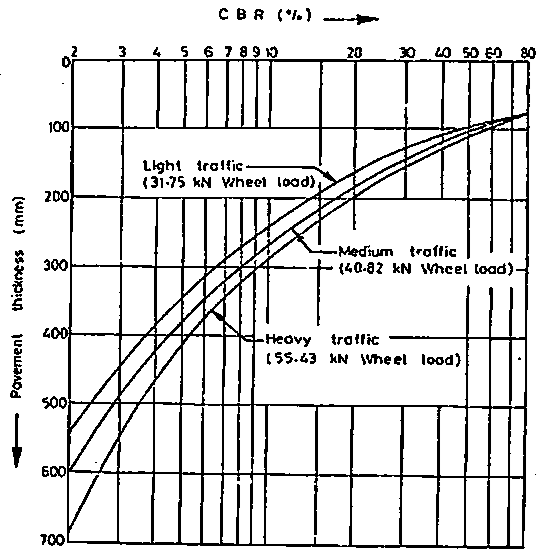
IRC (37-1970)
- Adopts UK based traffic classification based on the number of heavy vehicles
- Design chart include correlation between soaked CBR values and pavement thickness for 7 curves for different number of commercial vehicles per day
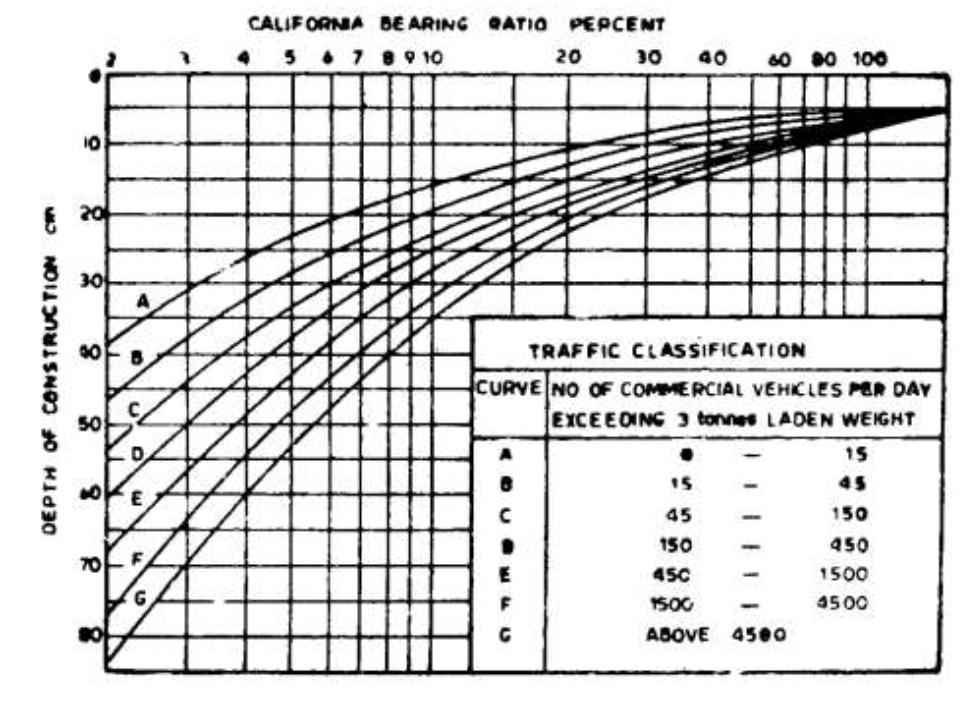
- Recommendations:
- CBR test should be performed in the laboratory following standard test procedure.
- Subgrade soil sample should be compacted at OMC to Proctor density whenever possible or to dry density achievable in the field.
- CBR test samples may be soaked in water for four days period before testing.
- At least three samples should be tested for each type of soil at the same density and moisture content.
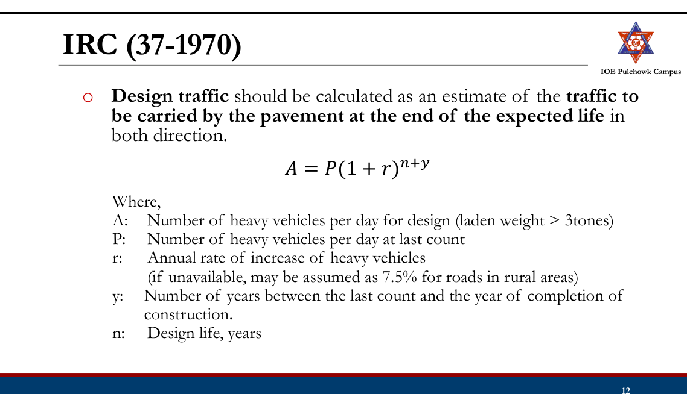
- Design steps:
- Evaluate the soak CBR value of the subgrade
- Choose appropriate curve considering the design traffic
- Determine the pavement thickness for the CBR value of the subgrade
- To determine thickness of sub-base, base and surface course, use the curves repeatedly
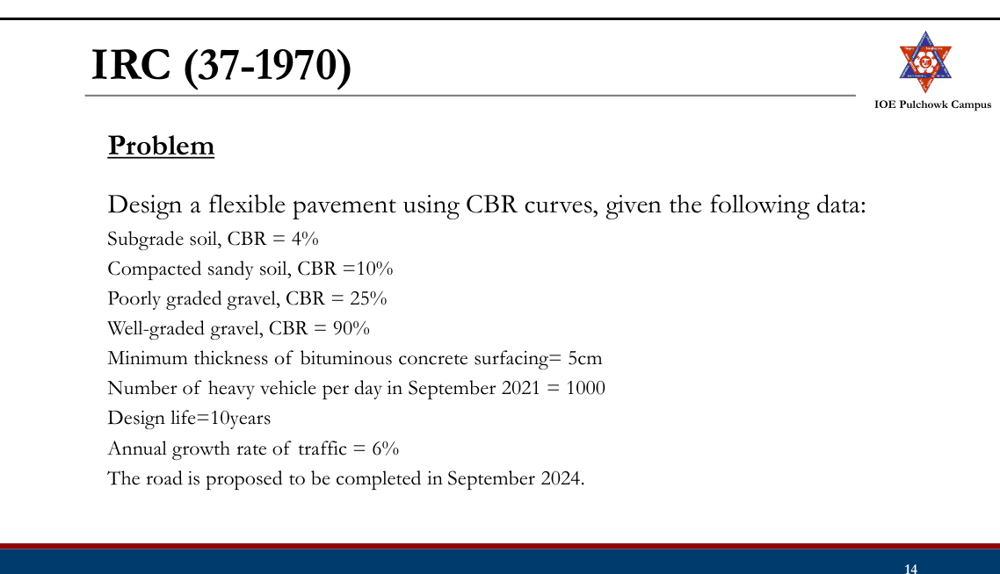
Road Note 31 /Catalogue Method
- Based on research conducted in countries throughout the world by Transport Research Laboratory UK
- First published in 1962, revised versions: 1966, 1977, 1993, 2024 (Fifth Edition)
- Cumulative number of standard axles (Road Note 29), catalogue based on full scale tests and empirical observations made in field.
- Considers variability in material properties, uncertainty in traffic forecast and effect of climate and high axle loads
- Overseas Road Note 31 (Fifth Edition) in 2024
- Caters traffic up to 80 million cumulative ESAL in one direction
- Guidance on design of Climate resilient surfacing
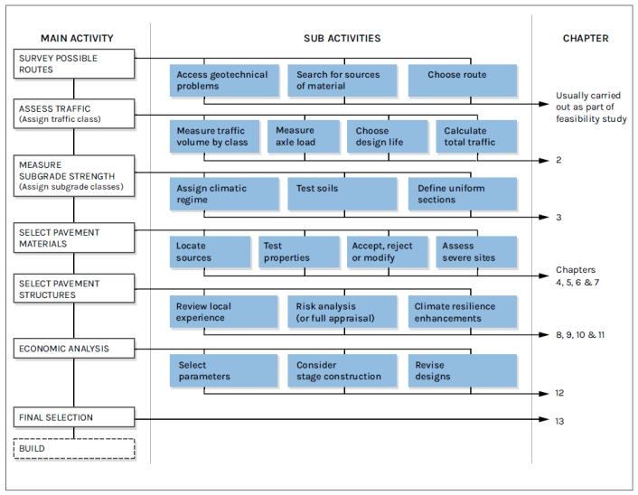
Pavement Layers:
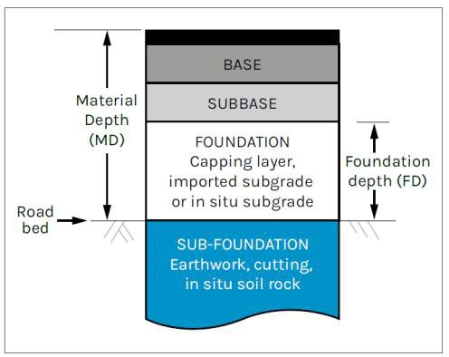
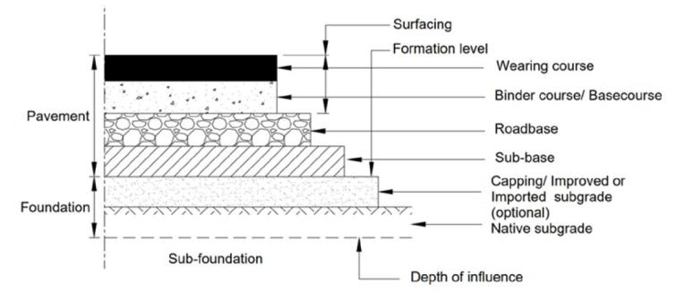
Design steps:
- Estimating the amount of traffic and the cumulative number of equivalent standard axles that will use the road over the selected design life;
- Only the total number and the axle loading of the heavy vehicles (unladen weight exceeding 3000 kg) need to be considered.
- Design life of 15 and 20 years to match that of project analysis period (Overseas Road Note 5).
- Determination of cumulative number of equivalent standard axles: a. Determine the daily traffic flow for each class of vehicle weighed, using the results of traffic surveys or from other recent traffic count information that is available. [Forecast of the one-directional traffic flow for each class of vehicle on the day it is opened to traffic including Normal, Generated and Diverted traffic)
Normal Traffic: Traffic that would pass along the existing road or track even if no new pavement were provided
Diverted Traffic: Traffic that changes from another route (or mode of transport) to the project road because of the improved pavement, but still travels between the same origin and destination
Generated Traffic: Additional traffic which occurs in response to the provision or improvement of the road.
b. Determine the average daily one-directional traffic flow for each class of vehicle. c. Determine the mean equivalency factor of each class of vehicle and for each direction from the results of axle load survey and any other surveys that have recently been carried out to convert the daily cvpd to 80kN equivalent standard axle load. Corrections are suggested to consider distribution of heavy vehicles between lanes.
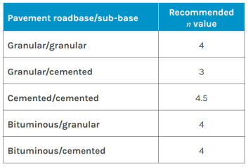
d. The products of the cumulative one-directional traffic flows for each class of vehicle over the design life of the road and the mean equivalence factor for that class added together is the cumulative ESAL for each direction. The larger of the two directional values should be used for design purposes.
[Determine the one-directional number of commercial vehicles per day for each class of vehicle for each year during the design life. The sum of number of commercial vehicles per day multiplied by 365 for each year of life is the cumulative traffic flow for the class in the design life. The sum of product of this cumulative traffic flow and corresponding equivalence factor for each class is the cumulative number of axles over the design life.] e) Data from the lane with the highest traffic loading, as determined, are then used to calculate the total traffic over the design life.
- Assessing the strength of the subgrade soil and foundation layer over which the road is to be built.
- The CBR test results taken along the alignment, and /or on material from borrow areas, are the principal means of empirical assessment. When a statistical analysis of CBR data is used to determine the design CBR, this should be undertaken by calculating the lower 10th percentile, or 5th percentile (depending on the reliability level chosen), of the laboratory CBR test results.
- Capping can be provided where the in situ untreated subgrade is weaker than is required by the selected pavement design charts. For very weak materials with CBR < 5.0%, there are specifically recommended capping.
- The subgrade (and capping layer, where required) is recognized as the foundation layer for the pavement.
- Selecting the most economical combination of pavement materials and layer thicknesses that will provide satisfactory service over the design life of the pavement using structural catalogues. For subgrade classes S1 and S2, capping layers using table must be applied before using the subsequent pavement design catalogues. This means that they must be converted to an effective Subgrade Class S3 (also known as Foundation Class F1) or higher. Subgrades of classes S3 to S5 may also be converted to higher effective classes using the capping options.
Charts and catalogues
Empirical Method
- Based on Soil Classification (Group Index Method)
- Based on Arbitrary Soil Strength Test (CBR Methods: IRC:37-1970, Road Note 29, Road Note 31)
- Based on Pavement Performance (AASHTO Method)
AASHTO Method
- Approximately 80% of all states in US use AASHTO pavement design and majority of states use AASHTO 1993 version.
- Empirical method based on field performance data measured at AASHO road test
- Design pavement based on specific total traffic volume and a minimum level of serviceability desired at the end of the performance period.
- Serviceability
- A subjective measure reflecting the ability of a pavement to serve the traffic
- Expressed in terms of the Present Serviceability Index (PSI) which varies from 5 (best) to 0 (worst) depending on the pavement condition
- During AASHO road test, a panel of road users made a subjective rating Present Serviceability Rating (PSR) of the pavement based on visual and sensory observations; 0 < PSR <5. PSRs were correlated to the PSIs which can be determined from physical measurements of pavement.
Design steps:
- Evaluate design traffic (W18):
- Determine the analysis period/design life Analysis period (AASHTO, 1993)
- Determine the cumulative ESAL for the design life in the design lane considering the growth factor (r), equivalent factor (truck factor), directional distribution factor (50% for most roadways) and lane distribution factor
- The guideline provides truck factor tables for flexible pavement for varying SN of pavement, terminal serviceability index and axle configuration
- Determine reliability factors (S0, ZR):
- Reliability (R) is the probability that the pavement section designed will perform satisfactorily over the traffic and environmental conditions for the design period. Suggested reliability for various functional classification (AASHTO, 1993)
- Evaluate resilient modulus (MR):
- AASHTO uses resilient modulus (MR) for material characterization.
- MR can be determined through triaxial laboratory tests detailed in AASHTO T307 method.
- Correlation between CBR value and the MR of soil: MR psi = 1500 × CBR (%) (Reasonable for fine-grained soil with a soaked CBR of 10 or less)
- Determine the overall structural number (SN)
- A measure of the structural strength of the pavement section based on type and thicknesses of the layers.
- Determine the structural numbers required above the base, subbase, and subgrade layers SN1, SN2, SN3 using design equation or nomograph.
- Determine structural layer coefficients (𝛼1, 𝛼2, 𝛼3)
- The relative structural value of each pavement layer per inch of thickness
- Depends on material properties (Resilient modulus and CBR values)
- For asphalt concrete surface course:
- Determine drainage coefficients (𝑚2, 𝑚3)
- To consider local drainage characteristics Drainage coefficients for untreated bases and subbases (AASHTO, 1993)
- The values of D1, D2 and D3 have to meet certain minimum practical thicknesses. Minimum thickness (in.) (AASHTO, 1993)
- The 3 equations allow for thickness compensations among layers.
- Depending on material availability in the location, the designer can make use of the thickness compensation concept to obtain the most economic pavement section.
- Can be done with trial and error.
Problem Design a pavement for a rural highway using AASHTO flexible design procedure. The expected design ESAL is 13x106. The pavement structure is to consist of asphalt concrete with an elastic modulus of 400,000 psi, a granular base with an elastic modulus of 26,000 psi and a granular sub base with an elastic modulus of 12,000 psi. The elastic modulus of the subgrade is 8,000 psi. The drainage conditions of base and subbase are fair. It is estimated that the pavement will be saturated about 15% of the time. Assume that a reliability level of about 90% is required and that the initial serviceability index is 4.2 and the final serviceability index is 2.5.
IRC Flexible Pavement Design Guidelines
- IRC: 37-1984 (First rev., empirical)
- IRC: 37-2001 (Second rev.), IRC: 37-2012 (Third rev.), IRC: 37- 2018 (Fourth rev.) are mechanistic empirical designs.
- Structural model: Multi-layered linear elastic system
- IRC 37-2012 ad IRC 37-2018 uses revised failure criterions, include use of effective resilient modulus/CBR of subgrade concept.
- IRC 37-2018 has improved material characterization with recommendations for better performing bituminous mixes and binders for each layers.
IRC (37-2018)
Scope: Design of pavements for roads with design traffic >2 msa. Design Approach and Criteria
- Pavement type selection
- Structural model and pavement analysis
- Reliability Criteria
- Performance criteria
Pavement Type Selection:
- Based on traffic volume, soil characteristics, availability of local materials etc.
- Typical configurations: a. Bituminous surface course with granular base and sub-base b. Bituminous surface course with CTSB, CTB and granular crack relief layer c. Bituminous surface course with CTSB, CTB and SAMI d. Bituminous surface course with CTSB and emulsion/foam bitumen stabilized RAP/ virgin aggregate e. Bituminous surface course with GSB, CTB and granular crack relief layer f. Bituminous surface course with CTSB and granular base course.
Structural Model and Pavement Analysis
- Multiple layer system, linear elastic layered theory
- Analysis of critical stress strains using IITPAVE
- Analysis is performed for performance of pavement in terms of
- Subgrade rutting
- Bottom-up fatigue cracking of bituminous layers
- Fatigue cracking of Cement Treated Base (CTB) layer
Critical Stress/Strain:
Reliability Criteria:
- 90 % reliability is recommended for all important roads such as National highways, State highways and Urban roads. For other roads, 90% reliability is recommended for design traffic volume of 20 msa or more.
- 80% reliability for design traffic volume of less than 20 msa.
Vehicle Damage Factor (VDF):
⁻ A multiplier for converting the number of commercial vehicles of different axle loads and axle configurations to the number of standard axle-load repetitions ⁻ Equivalent number of standard axles per commercial vehicle ELAF ⁻ The conversion of one repetition of a particular type of axle carrying a specific axle load into equivalent repetitions of 80 kN single axle can be done using a) b) c) d).
⁻ VDF for a typical vehicle can be obtained as the sum of the equivalency factor of all the axles in the vehicle.
- Design procedure:
- Selecting a trial composition.
- Bituminous mix design and the mix resilient modulus.
- Selecting layer thickness
- Structural analysis of the selected pavement structure (IITPAVE)
- Computing the allowable strains/stresses
- Doing the iterations
- Check for cumulative fatigue damage (For CTB)
DoR (2021): Flexible Pavement
- DoR (2014) and DoR(2021) Guidelines for the design of flexible pavements.
- DoR (Second Ed. 2021) major volume is much similar to IRC 37-2018 in terms of design approach: pavement configurations, structural model and analysis, reliability and performance criteria.
- Guidelines in major volume for design of highways with more than 2 msa follow mechanistic empirical approach.
- Guidelines for design of roads (low volume roads) with traffic upto 2 msa in Annex E (IRC SP72) and follow empirical approach.
ELAF
DoR (2021): Flexible Pavement (>2msa)
- Design procedure: using IITPAVE software or Software developed by DoR (https://fpd.dor.gov.np/)
- Design table for flexible pavement with bituminous surface course with granular base and sub-base
Excel sheet for main volume design (>2msa):
Practice Tasks from the Lecture
- Check and practice IRC recommended CBR method and Road Note 31.
- Check and practice AASHTO Method
3.5 Rigid pavement design (Westergaard theory)2081207620722071
Past Exam Questions on this Topic
- A CC pavement slab of thickness 20 cm is constructed over a granular subbase having a modulus of subgrade reaction of 15 kg/cm3. The maximum temperature difference between the top and bottom of the slab during a summer day and night is found to be 18 degC. The spacing between the transverse contraction joints is 4.5 m and that between the longitudinal joints is 3.5 m. The design wheel load is 5100 kg; radius of contact area is 15 cm; E value of CC is 3 x 10^5 kg/cm2; Poisson's ratio is 0.15; coefficient of thermal expansion is 10 x 10^-6 per degC and the friction coefficient is 1.5. Find the worst combination of stresses at the edge. (Bradbury's warping stress coefficient chart and the IRC edge load stress chart are attached with the paper.) [8] (2081 Baishakh, Q6)
Solution
h = 20 cm · k = 15 kg/cm³ · Δt = 18°C (top–bottom, summer day–night) · transverse contraction joints Lx = 4.5 m · longitudinal joints Ly = 3.5 m · P = 5100 kg · a = 15 cm · E = 3×105 kg/cm² · μ = 0.15 · α = 10×10−6/°C · friction coefficient f = 1.5 (W = 2400 kg/m³)Radius of relative stiffness
l = [E h³ / (12 k (1 − μ²))]0.25 = [3×10⁵ × 20³ / (12 × 15 × (1 − 0.15²))]0.25 = [2.4×10⁹ / 175.95]0.25 = [1.364×10⁷]0.25 = 60.77 cmEquivalent radius of the resisting section
a = 15 cm < 1.724 h = 34.5 cm → use the second form b = √(1.6a² + h²) − 0.675h = √(1.6×225 + 400) − 0.675×20 = √760 − 13.5 = 14.07 cmWarping (temperature) stress at the edge
Lx/l = 450/60.77 = 7.41 → Cx = 1.05 (Bradbury chart) Ly/l = 350/60.77 = 5.76 → Cy = 0.87 the larger coefficient governs → C = 1.05 σte = C · E · α · Δt / 2 = 1.05 × 3×10⁵ × 10×10⁻⁶ × 18 / 2 = 28.3 kg/cm²Load stress at the edge
From the IRC Edge Load Stress Chart supplied with the paper (drawn for exactly P = 5100 kg, a = 15 cm, E = 3×105 kg/cm², μ = 0.15), at h = 20 cm and k = 15 kg/cm³ → σle ≈ 24 kg/cm².
check by formula — the chart plots the IRC (Teller & Sutherland) equation: σle = 0.529 (P/h²)(1 + 0.54μ)[4 log₁₀(l/b) + log₁₀b − 0.4048] = 0.529 × (5100/400) × 1.081 × [4×0.6355 + 1.1483 − 0.4048] = 23.95 kg/cm² (Westergaard's original edge formula 0.572(P/h²)[4 log₁₀(l/b)+0.359] gives 21.16)Frictional stress
slab length between contraction joints, L = 4.5 m σf = W · L · f / (2×10⁴) = 2400 × 4.5 × 1.5 / 20 000 = 0.81 kg/cm²Critical combinations at the edge
Season Combination Value (kg/cm²) Summer, mid-day load + warping − friction (slab expanding, friction is compressive) 23.95 + 28.3 − 0.81 = 51.4 Winter, mid-day load + warping + friction (slab contracting, friction is tensile) 23.95 + 28.3 + 0.81 = 53.1 Worst combination of stresses at the edge = ≈ 53 kg/cm² (winter mid-day); the summer value is ≈ 51 kg/cm². (With Westergaard's unmodified edge stress the pair becomes 48.7 and 50.3 kg/cm².)Since ordinary pavement-quality concrete has a modulus of rupture of only about 40-45 kg/cm², a 20 cm slab on k = 15 kg/cm³ is not safe for this wheel load — the thickness would have to be increased.
Radius of relative stiffness, b, the IRC edge formula, Bradbury's chart, the frictional-stress equation and the summer/winter critical combinations are all taken from Manual.pdf §2.6-2.7, book pp.155-159.
- Write down the assumptions and analysis of Westergaard's Theory. How are the warping stress and friction stress developed in the rigid pavement? [8] (2076 Ashwin, Q6)
Solution
(a) Assumptions of Westergaard's theory
- The cement-concrete slab is a homogeneous, isotropic, thin elastic plate of uniform thickness.
- The subgrade behaves as a dense liquid (Winkler foundation): the reaction at any point is vertical and proportional to the deflection at that point — p = k·Δ, where k is the modulus of subgrade reaction.
- The slab remains in full contact with the subgrade throughout.
- The wheel load is distributed over a circular area of radius a; the load is static.
- The slab is of infinite extent in plan for interior loading; the three critical load positions are interior, edge and corner.
Analysis. The stiffness of the slab relative to the subgrade is expressed by the radius of relative stiffness, and the pressure is assumed to be resisted over an equivalent radius b:
l = [E h³ / (12 k (1 − μ²))]0.25 b = a for a ≥ 1.724 h b = √(1.6a² + h²) − 0.675h for a < 1.724 hPosition Critical load stress Interior Si = 0.316 P/h² · [4 log10(l/b) + 1.069] Edge Se = 0.572 P/h² · [4 log10(l/b) + 0.359] Corner Sc = 3 P/h² · [1 − (a√2/l)0.6] IRC uses the versions later modified by Teller & Sutherland (edge) and Kelley (corner).
(b) How the warping stress is developed
During the day the top of the slab is heated by the sun while the bottom stays cool, so a temperature differential Δt exists across the depth. The warmer face tries to expand more than the cooler face and the slab tends to warp (curl) — downwards at mid-day and upwards at night. This warping is restrained by the self-weight of the slab and by the subgrade friction, and the restraint produces warping stresses:
interior : σ = (EαΔt/2) · (Cx + μCy)/(1 − μ²) edge : σ = C · EαΔt / 2 corner : σ = EαΔt √(a/l) / [3(1 − μ)]where C, Cx, Cy are Bradbury's coefficients, read from the chart against L/l for the slab length and width. At mid-day the slab warps downwards, so the warping tension at the bottom adds to the load tension — this is the critical combination at the edge.
(c) How the frictional stress is developed
A uniform rise or fall of the mean slab temperature makes the whole slab expand or contract. The subgrade resists this movement by friction at the interface, so the slab is put into compression when it expands (summer) and into tension when it contracts (winter). Taking the friction force on half the slab length:
σf = W · L · f / (2 × 10⁴) kg/cm² W = 2400 kg/m³, L = slab length between joints (m), f ≈ 1.5Because σf grows with L, it is this stress that fixes the spacing of the contraction joints (L = 2×104σc/Wf ≈ 4.5 m for plain slabs).
Manual.pdf §2.6 and §2.7 — Westergaard's theory, temperature differential and subgrade friction, book pp.155-159.
- Differentiate between flexible pavement design and rigid pavement design. Describe Westergaard's concept for temperature stresses (2072 Chaitra, Q5)
Solution
(a) Flexible-pavement design vs rigid-pavement design
Flexible pavement design Rigid pavement design Load transfer assumed Grain-to-grain contact; the load spreads through the layers in a truncated cone Slab (beam/plate) action; the concrete slab bridges over the subgrade Design criterion Limit the deformation — vertical compressive strain on the subgrade (rutting) and tensile strain at the bottom of the bituminous layer (fatigue) Limit the flexural tensile stress in the slab to the modulus of rupture of the concrete Subgrade parameter CBR or resilient modulus MR Modulus of subgrade reaction k Method Empirical/mechanistic-empirical — CBR curves, Road Note 31 catalogue, AASHTO SN, IRC-37 / DoR catalogues, Asphalt Institute charts Analytical — Westergaard/IRC stress equations and charts, checked for the critical load + warping (± friction) combinations Output Thickness of several layers (surface, base, sub-base) One slab thickness plus the joint, dowel-bar, tie-bar and reinforcement design Temperature Enters only through the modulus of the bituminous layer Enters directly as warping and frictional stresses (b) Westergaard's concept of temperature stresses
Westergaard showed that temperature produces two distinct stresses in a concrete pavement:
1. Warping (curling) stress — caused by the differential temperature Δt between the top and the bottom of the slab. The hotter face wants to expand more, so the slab tries to curl; its own weight and the subgrade prevent this and bending stresses appear. With Bradbury's coefficients Cx, Cy (read against Lx/l and Ly/l):
interior : σti = (EαΔt/2)(Cx + μCy)/(1 − μ²) edge : σte = C · EαΔt / 2 corner : σtc = EαΔt √(a/l) / [3(1 − μ)]During the day the slab warps down (tension at the bottom, adds to the load stress at the edge); at night it warps up (tension at the top at the corner).
2. Frictional stress — caused by the uniform change of the mean slab temperature. The subgrade resists the free expansion/contraction of the slab:
σf = W · L · f / (2×10⁴)compressive in summer, tensile in winter, and it is the quantity that fixes the contraction-joint spacing.
Critical combinations (used for design):
- Summer mid-day, edge: load + warping − friction
- Winter mid-day, edge: load + warping + friction
- Mid-night, corner: load + warping (there is no frictional stress at the corner)
Manual.pdf §2.7 — Temperature differential and subgrade friction on rigid pavement, book pp.155-159.
- What do you understand by legal axle load and standard axle load? Describe the stresses induced in the rigid pavement slab. How is the spacing between contraction joints calculated in jointed plain concrete pavement? In the figure below, a pavement system with the resilient moduli, layer coefficient of surface course and drainage coefficients are shown. If the predicted ESAL = 15 x 10^6, R = 90%, So = 0.4, present serviceability index = 4.2 and terminal serviceability index = 2.7, select the thickness of D1, D2 and D3. [Figure: E1 = 450,000 psi with a1 = 0.44 (D1); E2 = 25,000 psi with m2 = 1.2 (D2); E3 = 15,000 psi with m3 = 1.2 (D3); subgrade MR = 5,000 psi.] (2071 Chaitra, Q5)
Solution
(a) Legal axle load and standard axle load
- Legal axle load — the maximum axle load that the law allows a vehicle to carry on a given highway network (in Nepal/India commonly 10.2 t for a single axle with dual wheels). It is a regulatory limit, enforced at weigh stations.
- Standard axle load — the reference axle of 80 kN (8.16 t), single axle with dual wheels, to which every other axle is converted through (L/80)4. It is a design yardstick, not a legal limit.
(b) Stresses induced in a rigid pavement slab
- Wheel-load stresses at the three critical positions — interior, edge and corner (Westergaard)
- Warping (temperature) stresses from the temperature differential across the slab
- Frictional stresses from the subgrade restraining the uniform expansion/contraction of the slab
Si = 0.316 P/h² [4 log₁₀(l/b) + 1.069] interior load Se = 0.572 P/h² [4 log₁₀(l/b) + 0.359] edge load Sc = 3 P/h² [1 − (a√2/l)0.6] corner load σti = (EαΔt/2)(Cx+μCy)/(1−μ²) interior warping σte = C · EαΔt/2 edge warping σtc = EαΔt √(a/l)/[3(1−μ)] corner warping σf = W · L · f/(2×10⁴) frictional(c) Spacing of contraction joints in JPCP
The joint spacing is fixed so that the frictional (tensile) stress developed in the slab as it contracts does not exceed the allowable tensile stress of the concrete (σc ≈ 0.8 kg/cm² for plain concrete):
σc = W · L · f/(2×10⁴) ⇒ L = 2×10⁴ · σc/(W · f) L = 2×10⁴ × 0.8 / (2400 × 1.5) = 4.44 mwith W = unit weight of concrete = 2400 kg/m³ and f = coefficient of subgrade friction = 1.5 — which is why IRC limits the contraction-joint spacing of plain slabs to 4.5 m. (For a reinforced slab the steel carries the friction force and the spacing may be increased to 13-14 m.)
(d) AASHTO-1993 layer design
W18 = 15 × 106 · R = 90% → ZR = −1.282 · S0 = 0.4 · pi = 4.2, pt = 2.7 → ΔPSI = 1.5 · E1 = 450 000 psi with a1 = 0.44 · E2 = 25 000 psi, m2 = 1.2 · E3 = 15 000 psi, m3 = 1.2 · subgrade MR = 5000 psiLayer coefficients
a₁ = 0.44 (given) a₂ = 0.249 log₁₀(25 000) − 0.977 = 0.249×4.39794 − 0.977 = 0.118 a₃ = 0.227 log₁₀(15 000) − 0.839 = 0.227×4.17609 − 0.839 = 0.109Required structural numbers
Solve the AASHTO equation three times, each time with the resilient modulus of the material directly below the interface being protected:
Interface protected MR used Required SN Top of base 25 000 psi SN1 = 3.42 Top of sub-base 15 000 psi SN2 = 4.18 Top of subgrade 5 000 psi SN3 = 6.08 Thicknesses (rounded up to the next practical value)
D₁ = SN₁/a₁ = 3.42/0.44 = 7.78 → D₁ = 8 in (≈ 200 mm) SN₁* = 0.44 × 8 = 3.52 D₂ = (SN₂ − SN₁*)/(a₂m₂) = (4.18 − 3.52)/(0.118×1.2) = 4.65 → D₂ = 5 in (≈ 125 mm) SN₂* = 0.118 × 1.2 × 5 = 0.708 D₃ = (SN₃ − SN₁* − SN₂*)/(a₃m₃) = (6.08 − 3.52 − 0.708)/(0.109×1.2) = 14.1 → D₃ = 15 in (≈ 375 mm)Check
SNprovided = 0.44×8 + 0.118×1.2×5 + 0.109×1.2×15 = 3.52 + 0.708 + 1.962 = 6.19 ≥ 6.08 ✓ safeD1 = 8 in (200 mm) asphalt concrete, D2 = 5 in (125 mm) base, D3 = 15 in (375 mm) sub-base.Stress formulae, joint-spacing equation and the AASHTO layered procedure are those of Manual.pdf §2.6-2.8 (book pp.155-159, 168) and §2.4.4 (book pp.144-149). The three SN values were obtained by solving the AASHTO-1993 equation numerically (the paper supplies the corresponding nomograph).
Design of Rigid Pavements
- Layered theory not suitable for analysis:
- Difference in material properties of rigid and flexible pavement
- Presence of joints in rigid pavements
- Analyzed using plate theory
- Assumes concrete slab as thin plate with a plane before bending to remain plane after bending
Types of Rigid Pavements
- Jointed Plain Concrete Pavement (JPCP)
- Jointed Reinforced Concrete Pavement (JRCP)
- Continuously Reinforced Concrete Pavement (CRCP)
- Prestressed Concrete Pavement (PCP)
Jointed Plain Concrete Pavement (JPCP)
- Closely spaced contraction joints
- Dowel bars may be provided for load transfer across the joints
- Joint spacing 4.6 to 9.1m
- Recommended maximum joint spacing
- 6.1m for doweled system
- 4.6m for undoweled system
Jointed Reinforced Concrete Pavement (JRCP)
- Steel reinforcement in the form of wire mesh or deformed bars to allow longer joint spacing
- Dowels for load transfer across the joints
- Joint spacing from 9.1m to 30m
- Most economical joint spacing 12.2 m considering the cost of mesh, dowels, joint sealants etc.
Continuously Reinforced Concrete Pavement (CRCP)
- Continuous reinforcement and do not require transverse contraction joints
- Preferred in heavy traffic roads or weak subgrades
- Thickness reduced by 1 to 2 inch compared to conventional pavement
- Transverse cracks are expected in the slab in close intervals but are held together tightly by the reinforcing steel.
Prestressed Concrete Pavement (PCP)
- Prestressing reduces the tensile stress under traffic loads.
- Less probability of cracking, fewer transverse joints and less maintenance requirement
Stresses in Rigid Pavement
- Mainly due to:
- Applied wheel load
- Changes in temperature
Wheel Load Stresses
- Maximum stress induced by wheel load depends on location of load on the pavement surface
- Critical loading positions:
- Interior
- Edge and
- Corner
Westergaard’s Theory
- Westergaard (1926) developed equations for critical wheel load stresses.
- The wheel load stresses and deflections depend on wheel load (P), slab thickness (h), radius of relative stiffness (l) and equivalent radius of resisting section (b)
- Assumptions:
- Concrete slab acts as homogeneous, isotropic, elastic solid in equilibrium.
- Thickness of slab is uniform.
- Rigid pavement is considered to be a thin elastic plate resting on soil sub-grade which is assumed as a dense liquid. The subgrade reaction is vertical only and is proportional to the deflection of slab.
- The load at the interior and at the corner of the slab is distributed over a circular area of contact
- The load at the edge of the slab is distributed uniformly over semi-circular area of contact.
Radius of Relative Stiffness (l )
Modulus of Subgrade Reaction(k)
Equivalent Radius of Resisting Section (b)
Equations for Wheel Load Stress
Temperature Stresses
- Stresses due to variation in slab temperature
- Daily temperature variation → Warping stresses
- Seasonal variation → Frictional stresses
Warping Stress
- Daily temperature variation results temperature gradient across the slab thickness causing slab to curl and develops warping stress.
Frictional Stress
Practice Tasks from the Lecture
- Review types of rigid pavement and stresses in rigid pavement and Westergaard theory
3.6 Design of rigid pavement by latest IRC and AASHTO method2081207820752074
Past Exam Questions on this Topic
- Calculate the length and spacing of dowel bars of dia 25 mm at an expansion joint of a concrete pavement of thickness 25 cm. Design wheel load 5000 kg. Load capacity of the dowel system is 40 percent of the design wheel load. Joint width is 2.0 cm and the permissible stresses in shear, bending and bearing in the dowel bars are 1000, 1400 and 100 kg/cm2 respectively. Modulus of elasticity of concrete 2.45 x 10^5 kg/cm2; modulus of subgrade reaction = 8 kg/cm3; Poisson ratio 0.15. [8] (2081 Bhadra, Q6)
Solution
Dowel bar diameter d = 25 mm = 2.5 cm · slab thickness h = 25 cm · design wheel load P = 5000 kg · the dowel system must carry 40% of P · expansion-joint width δ = 2.0 cm · permissible stresses Fs = 1000 (shear), Ff = 1400 (bending), Fb = 100 kg/cm² (bearing) · E = 2.45×105 kg/cm² · k = 8 kg/cm³ · μ = 0.15Length of the dowel bar
Bradbury's design equates the load capacity of the bar in bending and in bearing, which gives the balanced embedment length Ld (solved by trial):
Ld = 5d √[(Ff/Fb) · (Ld + 1.5δ)/(Ld + 8.8δ)] = 5 × 2.5 √[14 × (Ld + 3.0)/(Ld + 17.6)] = 12.5 √[14 (Ld + 3)/(Ld + 17.6)]Trial Ld (cm) RHS (cm) 30 38.6 38 40.2 40 40.4 40.5 40.5 ✓ Ld = 40.5 cm total length = Ld + δ = 40.5 + 2.0 = 42.5 cm → provide 43 cm long, 25 mm φ bars actual embedded length Ld = 43 − 2 = 41 cm (20.5 cm each side)Load-transfer capacity of one dowel bar (Ld = 41 cm)
shear : Ps = 0.785 d² Fs = 0.785 × 2.5² × 1000 = 4906 kg bending : Pf = 2d³Ff/(Ld+8.8δ) = 43 750 / 58.6 = 747 kg bearing : Pb = FbLd²d/[12.5(Ld+1.5δ)] = 420 250 / 550 = 764 kg the smallest governs → capacity of one bar = 747 kg (bending)Capacity factor required from the dowel group
load to be transferred = 40% of 5000 = 2000 kg required capacity factor = 2000 / 747 = 2.68Effective length of the dowel group
l = [E h³ / (12 k (1 − μ²))]0.25 = [2.45×10⁵ × 25³ / (12 × 8 × 0.9775)]0.25 = [4.079×10⁷]0.25 = 79.9 cm load is transferred by the bars within 1.8 l on either side: 1.8 l = 1.8 × 79.9 = 143.9 cmSpacing of the dowel bars
The bar under the load counts 1.0 and every other bar counts (1.8l − x)/1.8l, x being its distance from the load:
Trial spacing Capacity factor available ≥ 2.68 ? 40 cm 1 + 0.722 + 0.444 + 0.166 = 2.33 No 35 cm 1 + 0.757 + 0.513 + 0.270 + 0.027 = 2.57 No 33 cm 1 + 0.771 + 0.541 + 0.312 + 0.082 = 2.71 Yes (just) 30 cm 1 + 0.791 + 0.583 + 0.374 + 0.166 = 2.91 Yes ✓ Provide 25 mm φ mild-steel dowel bars, 43 cm long (say 45 cm), at 30 cm centre-to-centre across the expansion joint — one half of every bar painted/greased and fitted with an expansion cap so that it is free to slide.Dowel-bar equations (balanced Ld, the three capacities, the 40% rule, the 1.8 l effective group and the spacing check) are exactly those worked in Manual.pdf §2.8, book pp.168 and 172.
- Explain the stresses in rigid pavement. Write down the design procedure of dowel bars at expansion joints. [8] (2078 Bhadra, Q10)
Solution
(a) Stresses in a rigid pavement
1. Wheel-load stresses (Westergaard) at the three critical positions:
Position Stress Remark Interior Si = 0.316P/h²[4 log10(l/b) + 1.069] tension at the bottom Edge Se = 0.572P/h²[4 log10(l/b) + 0.359] largest load stress; tension at the bottom Corner Sc = 3P/h²[1 − (a√2/l)0.6] tension at the top l = [Eh³/(12k(1−μ²))]0.25 b = √(1.6a²+h²) − 0.675h for a < 1.724h2. Warping (temperature) stresses due to the differential Δt across the slab — interior (Cx+μCy)EαΔt/[2(1−μ²)], edge C·EαΔt/2, corner EαΔt√(a/l)/[3(1−μ)].
3. Frictional stresses due to the subgrade restraining the uniform expansion/contraction: σf = WLf/(2×104) — compressive in summer, tensile in winter.
Critical combinations: summer mid-day at the edge = load + warping − friction; winter mid-day at the edge = load + warping + friction; mid-night at the corner = load + warping. All are checked against the modulus of rupture of the concrete.
(b) Design procedure for dowel bars at an expansion joint
- Fix the dowel diameter d (IRC: 25 mm for h = 20-25 cm) and the joint width δ. Dowels are used only when h ≥ 15 cm.
- Find the balanced embedment length by equating the bending and bearing capacities:
Ld = 5d√[(Ff/Fb)(Ld+1.5δ)/(Ld+8.8δ)] — solved by trial. Total bar length = Ld + δ, rounded up. - Compute the load capacity of a single bar in the three modes and take the least:
shear Ps = 0.785d²Fs; bending Pf = 2d³Ff/(Ld+8.8δ); bearing Pb = FbLd²d/[12.5(Ld+1.5δ)]. - The dowel system is designed to transfer 40% of the design wheel load; hence the required capacity factor = 0.40P / (capacity of one bar).
- Compute l and take the effective load-transfer zone as 1.8 l on either side of the load.
- Assume a spacing s; the available capacity factor = 1 + Σ(1.8l − n·s)/1.8l for all bars inside the zone. Reduce s until the available factor exceeds the required factor.
- Detail the bars: one half greased/painted with an expansion cap, placed at mid-depth of the slab, parallel to the centre line and to the surface.
Manual.pdf §2.6-2.8 — stresses (book pp.155-159) and dowel-bar design (book pp.168, 172).
- Estimate the thickness of a plain cement concrete pavement for a 7m wide highway following the design procedure recommended by the Indian Roads Congress (IRC), using IRC stress charts for edge and corner regions wherever applicable. Use the following data: Design wheel load = 5100 kg; Traffic growth rate = 7.5%; Present traffic intensity = 1050 cvpd; Design life = 20 years; Construction period = 3 years; Radius of contact area = 15 cm; Modulus of elasticity of concrete = 3.0 x 10^5 kg/cm2; Poisson's ratio of concrete = 0.15; Modulus of rupture of concrete = 40 kg/cm2; Thermal expansion of concrete = 10 x 10^-6 per degC; Modulus of subgrade reaction = 6 kg/cm3; Maximum temperature in summer = 50 degC; Maximum temperature in winter = 15 degC. The temperature differential in the slab for thickness of 15, 20 and 25 cm is 17.3, 19.0 and 20.3 degC respectively. (2075 Chaitra, Q6)
Solution
7 m wide plain cement-concrete pavement · design wheel load P = 5100 kg · contact radius a = 15 cm · E = 3.0×105 kg/cm² · μ = 0.15 · modulus of rupture = 40 kg/cm² · α = 10×10−6/°C · k = 6 kg/cm³ · summer 50°C, winter 15°C (ΔT = 35°C) · present traffic 1050 cvpd, r = 7.5%, design life 20 yr, construction 3 yr · Δt = 17.3, 19.0, 20.3°C for h = 15, 20, 25 cmSpacing of joints
EXPANSION JOINT (gap δ = 2.5 cm, each slab may move δ/2 = 1.25 cm) Le = (δ/2)/(α · ΔT) = 1.25/(10×10⁻⁶ × 35) = 3571 cm = 35.7 m ≤ 40 m ✓ CONTRACTION JOINT (plain slab, σc = 0.8 kg/cm², W = 2400 kg/m³, f = 1.5) Lc = 2×10⁴ σc/(W · f) = 2×10⁴ × 0.8/(2400 × 1.5) = 4.44 m ≤ 4.5 m ✓Provide contraction joints at 4.44 m and an expansion joint at every 8th contraction joint (8 × 4.44 = 35.5 m ≈ 35.7 m).
Trial slab thickness
For each trial h compute l = [Eh³/(12k(1−μ²))]0.25, b = √(1.6a²+h²) − 0.675h, C from Bradbury's chart at Lc/l, the edge warping stress C·EαΔt/2 and the IRC edge load stress 0.529(P/h²)(1+0.54μ)[4log10(l/b)+log10b−0.4048]:
h (cm) Δt (°C) l (cm) b (cm) Lc/l C Edge load σle Edge warping σte Total (kg/cm²) ≤ 40 ? 15 17.3 61.6 14.06 7.31 1.044 42.89 27.10 69.99 Fail 20 19.0 76.4 14.07 5.89 0.898 26.85 25.59 52.44 Fail 25 20.3 90.3 14.51 4.98 0.715 18.36 21.76 40.12 ≈ 40, just adequate at h = 25 cm: residual strength for load = 40 − 21.76 = 18.24 kg/cm² edge load stress = 18.36 kg/cm² factor of safety = 18.24/18.36 = 0.99 ≈ 1.0 → adopt h = 25 cm summer check (friction is compressive): σf = 2400 × 4.44 × 1.5/(2×10⁴) = 0.80 kg/cm² 18.36 + 21.76 − 0.80 = 39.3 kg/cm² < 40 ✓A strictly > 1 check would take h = 26 cm (FS = 1.12).
Check the corner region (h = 25 cm, no frictional stress at the corner)
corner load stress (Kelley) = 3P/h² [1 − (a√2/l)0.6] = 3×5100/625 × [1 − (21.21/90.3)0.6] = 14.22 kg/cm² corner warping stress = EαΔt √(a/l)/[3(1−μ)] = 3×10⁵ × 10×10⁻⁶ × 20.3 × √(15/90.3)/(3 × 0.85) = 9.73 kg/cm² total at corner = 14.22 + 9.73 = 23.95 kg/cm² < 40 ✓ safeAdjustment for traffic intensity
Ad = P(1 + r)(n + y) = 1050 (1.075)20+3 = 1050 × 5.277 = 5541 cvpd 5541 > 4500 → traffic group G → thickness adjustment = +2 cm design thickness = 25 + 2 = 27 cmProvide a 270 mm thick plain cement-concrete slab, contraction joints at 4.44 m, expansion joints at 35.5 m, with 25 mm φ dowel bars at the expansion joints and 10 mm φ tie bars at 30 cm c/c across the longitudinal joint (the 7 m carriageway > 4.5 m requires one).Step-for-step the IRC design worked in Manual.pdf §2.8, book pp.169-173 (joint spacing → trial thickness with warping + IRC load stress → corner check → traffic adjustment Ad = P(1+r)n+y and the group-G +2 cm correction → dowel and tie bars). Load stresses computed from the IRC (Teller & Sutherland / Kelley) equations that the IRC stress charts plot, book p.156.
- What are the factors affecting rigid pavement design? Write down the steps of IRC design guidelines for rigid pavement. (2074 Ashwin, Q5)
Solution
(a) Factors affecting rigid-pavement design
- Wheel load and its repetitions — design wheel load (5100 kg for IRC charts), contact radius, and the number of commercial vehicles projected to the end of the design life Ad = P(1+r)n+y, which fixes the traffic group and the thickness adjustment.
- Subgrade / sub-base support — modulus of subgrade reaction k (from a plate-bearing test, corrected for the sub-base); k enters the radius of relative stiffness l = [Eh³/(12k(1−μ²))]0.25.
- Concrete properties — flexural strength (modulus of rupture, 40-45 kg/cm²), E, μ and the coefficient of thermal expansion α.
- Temperature differential Δt across the slab (region- and thickness-dependent) which produces the warping stresses; and the seasonal temperature range which, with the coefficient of subgrade friction f, produces the frictional stresses.
- Slab geometry / joint spacing — Lx, Ly control Bradbury's coefficients and hence the warping stress; the carriageway width decides whether a longitudinal joint is needed.
- Drainage and shoulder type, and whether a tied concrete shoulder is provided (reduces the edge stress).
(b) Steps of the IRC design guideline for rigid pavement
- Collect design data — P, a, k, E, μ, α, flexural strength, Δt, present traffic, growth rate, design life and construction period.
- Compute the design traffic Ad = P(1 + r)(n+y) and identify the traffic group (A … G).
- Fix the joint spacings — expansion joint Le = (δ/2)/(αΔT) (≤ 140 m rough / 90 m smooth sub-base) and contraction joint Lc = 2×104σc/(Wf) (≤ 4.5 m plain slab).
- Assume a trial thickness h and compute l and b.
- Warping stresses — read Bradbury's C from L/l and compute σte = C·EαΔt/2 (edge) and σtc = EαΔt√(a/l)/[3(1−μ)] (corner).
- Residual strength = flexural strength − warping stress.
- Load stresses — read the edge and corner load stress from the IRC stress charts for h and k (or compute from the Teller & Sutherland / Kelley equations).
- Check factor of safety = residual strength / load stress at the edge; if it is much greater or less than 1, revise h and repeat from step 4. Also verify (load + warping) at the corner ≤ flexural strength.
- Adjust for traffic intensity — add the thickness increment prescribed for the traffic group (e.g. +2 cm for group G).
- Design the joint furniture — dowel bars at the expansion joints (Bradbury's method, 40% load transfer, effective group 1.8 l), tie bars at the longitudinal joint (As = bfhW/Ss, length = dSs/2τ) and, for JRCP, the temperature reinforcement As = LWf/(2Ss).
Manual.pdf §2.8 — Details of the IRC method of design of rigid pavements for highways, book pp.164-173.
DoR (2021) and IRC 58-2015 Rigid Pavement Design
- DoR (2021) Pavement Design Guidelines (Rigid Pavement) is very much similar to IRC 58-2015.
- Mainly focused for design of Jointed Plain Cement Concrete Pavement
- Applicable for roads having daily commercial traffic (vehicle laden weight exceeding 3T) of over 450.
Design of Slab Thickness (DoR, 2021, IRC 58-2015)
- Design Factors: Subgrade and Subbase Characteristics, Concrete Characteristics, Axle Load and Traffic Considerations, Temperature Differential
- Features:
- Design of pavements considering the combined flexural stress under the simultaneous action of load and temperature gradient for different categories of axles.
- Design for bottom-up fatigue cracking caused by single and tandem axle load repetitions.
- Design for top-down fatigue cracking caused by single, tandem and tridem axle load applications.
- Consideration for with and without tied concrete shoulders
- Consideration for with and without dowel bars
- Steps:
- Consider a pavement configuration and specify design values for the various parameters.
- Estimate the axle load repetitions critical to BUC.
- Estimate the axle load repetitions critical to TDC.
- Select a trial design thickness of pavement slab
- Compute the flexural stresses at the bottom of the slab for different axle loads. Determine stress ratios and evaluate Cumulative Fatigue Damage (CFD)s. Sum of CFDs should be less than 1 to be safe in BUC.
- Compute the flexural stresses at the top of the slab for different axle loads. Determine stress ratios and evaluate CFD. The sum of CFDs should be less than 1 to be safe in TDC.
- The sum of CFDs for the BUC and TDC should be less than 1 to be safe in fatigue cracking.
Typical Cross Sections of Concrete Pavements
Subgrade
- The strength of subgrade is expressed by modulus of subgrade reaction k, which is the pressure per unit deflection (1.25 mm) as determined by plate load tests.
- Design k-value is often estimated from the soaked CBR test value
Effective CBR
- Minimum subgrade CBR of 8 percent is recommended for design.
Sub-Base
- K value for granular and cement treated subbases:
- K value for Dry Lean Concrete (DLC) subbases with separation and
drainage layers:
Characteristic of Concrete
Axle Load Characteristics
- Day time night time traffic analysis is important.
- Axle load survey of sample commercial vehicles is recommended.
- When data availability is limited (Appendix VII, DoR, 2021): For conversion of average number of axles for commercial vehicles: Busy highways 3.2 Feeder road 2.1 Percentage of front single, rear single, tandem and tridem axle can be taken as 31, 9, 28 and 32 respectively.
- Axle load spectrum can be taken as:
Design Traffic
Design Traffic (BUC)
- Commercial vehicles with tyre imprint of the outer wheel touching the longitudinal edge during six hours in day (10am to 4pm).
- For bottom-up cracking, single axle load causes the largest edge stress followed by tandem and tridem axles. So tridem axles are not considered for analysis.
- It is recommended that 25% of the total two-way commercial traffic may be considered as design traffic for two-lane two-way roads for the analysis of bottom-up cracking.
- For four lane and other multi-lane divided highways, 25% of the total traffic in the direction of predominant traffic may be considered for design of pavement for bottom-up cracking.
Design Traffic (TDC)
- Six hour night time (0am to 6am) commercial vehicles with the spacing between the front axle and the first rear axle (single/tandem/tridem) less than the spacing of transverse joints should be considered for top-down cracking analysis.
- A default value of 50% of the design traffic used for bottom-up cracking analysis may be considered for the analysis of top-down cracking when data availability is limited.
Temperature Differential
Calculation of Flexural Stresses (BUC)
- Finite Element Analysis of a large number of concrete pavements with different pavement configurations subjected to various combinations of axle loads and temperature differentials have been presented in the form of charts in Appendix
IV (chart) & Appendix V(Equations). Sample charts:
- Equations:
Calculation of Flexural Stresses (TDC)
- Critical top flexural stress is caused by a specified magnitude of single/tandem/tridem axle in combination with a specified negative temperature differential
Calculation Fatigue Damage (CFD) Analysis
- For each axle load group, flexural stress is divided by the design flexural strength or modulus of rupture of the cement concrete to obtain stress ratio (SR).
- If SR is less than 0.45, allowable number of cycles of axle load (N) is infinity.
- Otherwise:
- The cumulative fatigue damage caused to the slab during its service life should be equal to or less than one.
- If the sum of fatigue damages due to wheel load and curling stresses at the bottom and at the top is equal to or less than 1, the pavement is
safe from large scale cracking if: CFD (BUC) + CFD (TDC) < 1
Design of Slab Thickness (DoR, 2021, IRC 58-2015)
AASHTO 1993 Rigid Pavement Design
- Evaluate concrete properties (modulus of rupture 𝑆𝑐′, elastic modulus Ec) and subgrade strength (modulus of subgrade reaction k)
- Drainage Coefficient (Cd)
- Depending on expected level of drainage. Recommended drainage coefficients (Cd)
- Load Transfer Coefficient (J)
- Ability of concrete pavement to transfer load across discontinuities such as joints or cracks. Recommended load transfer coefficients (J)
- Iteratively solve the AASHTO equation or use nomograph for slab thickness
Practice Tasks from the Lecture
- Review design of rigid pavement by IRC 58-2015, DoR 2021 and AASHTO method
3.7 Pavement design (Surface dressing method) for low cost road, IRC method
IRC SP72-2015 and DoR, 2021
Subgrade Strength Classification:
- Traffic is classified as per the equivalent standard axle load calculated for the design. The category of traffic class is shown the table below:
Thickness
Design (Design
Chart):
Thickness
Design (Design
Chart):
Design of Surface Dressing (DoR, 2021)
- Nominal Size of Chipping:
- Based on volume of commercial vehicle with unladen weights more than 1.5 tonnes and hardness of existing pavement.
- Selection of Binder:
- Selection of viscosity graded (VG) paving bitumen based on climatic condition.
- Determination of overall weighing factor : If the existing surface of the road is rough, it should be rated as 'very lean bituminous' even if its overall colour is dark with bitumen. Similarly, when determining the rate of spread of binder for the second layer of a double surface dressing, the first layer should also be rated 'very lean bituminous.
- Determination of bitumen spray rate:
- For slow traffic or climbing grades with gradients steeper than 3 percent, the basic rate of spread of binder should be reduced by approximately 10 percent.
- For fast traffic or downgrades steeper than 3 percent the basic rate of spread of binder should be increased by approximately 10 percent.
- Emulsion binders: multiply the rate of spread by 90 / bitumen content of the emulsion (per cent).
- Determination of spread rate of chippings:
DOR (2021): Flexible Pavement (Upto 2msa)
Practice Tasks from the Lecture
- Check and practice IRC (37: 2018) and DOR (2021)
- Check and practice DOR (2021) low volume roads, IRC SP- 2015